7 Asymptotic Theory for Least Squares
7.1 Introduction
It turns out that the asymptotic theory of least squares estimation applies equally to the projection model and the linear CEF model. Therefore the results in this chapter will be stated for the broader projection model described in Section 2.18. Recall that the model is \(Y=X^{\prime} \beta+e\) with the linear projection coefficient \(\beta=\left(\mathbb{E}\left[X X^{\prime}\right]\right)^{-1} \mathbb{E}[X Y]\).
Maintained assumptions in this chapter will be random sampling (Assumption 1.2) and finite second moments (Assumption 2.1). We restate these here for clarity.
Assumption 7.1
The variables \(\left(Y_{i}, X_{i}\right), i=1, \ldots, n\), are i.i.d.
\(\mathbb{E}\left[Y^{2}\right]<\infty\).
\(\mathbb{E}\|X\|^{2}<\infty\).
\(\boldsymbol{Q}_{X X}=\mathbb{E}\left[X X^{\prime}\right]\) is positive definite.
The distributional results will require a strengthening of these assumptions to finite fourth moments. We discuss the specific conditions in Section 7.3.
7.2 Consistency of Least Squares Estimator
In this section we use the weak law of large numbers (WLLN, Theorem 6.1 and Theorem 6.2) and continuous mapping theorem (CMT, Theorem 6.6) to show that the least squares estimator \(\widehat{\beta}\) is consistent for the projection coefficient \(\beta\).
This derivation is based on three key components. First, the OLS estimator can be written as a continuous function of a set of sample moments. Second, the WLLN shows that sample moments converge in probability to population moments. And third, the CMT states that continuous functions preserve convergence in probability. We now explain each step in brief and then in greater detail. First, observe that the OLS estimator
\[ \widehat{\beta}=\left(\frac{1}{n} \sum_{i=1}^{n} X_{i} X_{i}^{\prime}\right)^{-1}\left(\frac{1}{n} \sum_{i=1}^{n} X_{i} Y_{i}\right)=\widehat{\boldsymbol{Q}}_{X X}^{-1} \widehat{\boldsymbol{Q}}_{X Y} \]
is a function of the sample moments \(\widehat{\boldsymbol{Q}}_{X X}=\frac{1}{n} \sum_{i=1}^{n} X_{i} X_{i}^{\prime}\) and \(\widehat{\boldsymbol{Q}}_{X Y}=\frac{1}{n} \sum_{i=1}^{n} X_{i} Y_{i}\).
Second, by an application of the WLLN these sample moments converge in probability to their population expectations. Specifically, the fact that \(\left(Y_{i}, X_{i}\right)\) are mutually i.i.d. implies that any function of \(\left(Y_{i}, X_{i}\right)\) is i.i.d., including \(X_{i} X_{i}^{\prime}\) and \(X_{i} Y_{i}\). These variables also have finite expectations under Assumption 7.1. Under these conditions, the WLLN implies that as \(n \rightarrow \infty\),
\[ \widehat{\boldsymbol{Q}}_{X X}=\frac{1}{n} \sum_{i=1}^{n} X_{i} X_{i}^{\prime} \underset{p}{\longrightarrow}\left[X X^{\prime}\right]=\boldsymbol{Q}_{X X} \]
and
\[ \widehat{\boldsymbol{Q}}_{X Y}=\frac{1}{n} \sum_{i=1}^{n} X_{i} Y_{i} \underset{p}{\longrightarrow}[X Y]=\boldsymbol{Q}_{X Y} \]
Third, the CMT allows us to combine these equations to show that \(\widehat{\beta}\) converges in probability to \(\beta\). Specifically, as \(n \rightarrow \infty\),
\[ \widehat{\beta}=\widehat{\boldsymbol{Q}}_{X X}^{-1} \widehat{\boldsymbol{Q}}_{X Y} \underset{p}{\longrightarrow} \boldsymbol{Q}_{X X}^{-1} \boldsymbol{Q}_{X Y}=\beta . \]
We have shown that \(\widehat{\beta} \underset{p}{\rightarrow} \beta\) as \(n \rightarrow \infty\). In words, the OLS estimator converges in probability to the projection coefficient vector \(\beta\) as the sample size \(n\) gets large.
To fully understand the application of the CMT we walk through it in detail. We can write
\[ \widehat{\beta}=g\left(\widehat{\boldsymbol{Q}}_{X X}, \widehat{\boldsymbol{Q}}_{X Y}\right) \]
where \(g(\boldsymbol{A}, \boldsymbol{b})=\boldsymbol{A}^{-1} \boldsymbol{b}\) is a function of \(\boldsymbol{A}\) and \(\boldsymbol{b}\). The function \(\boldsymbol{g}(\boldsymbol{A}, \boldsymbol{b})\) is a continuous function of \(\boldsymbol{A}\) and \(\boldsymbol{b}\) at all values of the arguments such that \(A^{-1}\) exists. Assumption \(7.1\) specifies that \(\boldsymbol{Q}_{X X}\) is positive definite, which means that \(\boldsymbol{Q}_{X X}^{-1}\) exists. Thus \(\boldsymbol{g}(\boldsymbol{A}, \boldsymbol{b})\) is continuous at \(\boldsymbol{A}=\boldsymbol{Q}_{X X}\). This justifies the application of the CMT in (7.2).
For a slightly different demonstration of (7.2) recall that (4.6) implies that
\[ \widehat{\beta}-\beta=\widehat{\boldsymbol{Q}}_{X X}^{-1} \widehat{\boldsymbol{Q}}_{X e} \]
where
\[ \widehat{\boldsymbol{Q}}_{X e}=\frac{1}{n} \sum_{i=1}^{n} X_{i} e_{i} . \]
The WLLN and (2.25) imply
\[ \widehat{\boldsymbol{Q}}_{X e} \underset{p}{\longrightarrow} \mathbb{E}[X e]=0 . \]
Therefore
\[ \widehat{\beta}-\beta=\widehat{\boldsymbol{Q}}_{X X}^{-1} \widehat{\boldsymbol{Q}}_{X e} \underset{p}{\longrightarrow} \boldsymbol{Q}_{X X}^{-1} 0=0 \]
which is the same as \(\widehat{\beta} \underset{p}{\vec{p}}\). Theorem 7.1 Consistency of Least Squares. Under Assumption 7.1, \(\widehat{\boldsymbol{Q}}_{X X} \vec{p}\) \(\boldsymbol{Q}_{X X}, \widehat{\boldsymbol{Q}}_{X Y} \underset{p}{\boldsymbol{Q}_{X Y}}, \widehat{\boldsymbol{Q}}_{X X}^{-1} \vec{p} \boldsymbol{Q}_{X X}^{-1}, \widehat{\boldsymbol{Q}}_{X e} \underset{p}{\rightarrow} 0\), and \(\widehat{\beta} \underset{p}{\overrightarrow{3}} \beta\) as \(n \rightarrow \infty\)
Theorem \(7.1\) states that the OLS estimator \(\widehat{\beta}\) converges in probability to \(\beta\) as \(n\) increases and thus \(\widehat{\beta}\) is consistent for \(\beta\). In the stochastic order notation, Theorem \(7.1\) can be equivalently written as
\[ \widehat{\beta}=\beta+o_{p}(1) . \]
To illustrate the effect of sample size on the least squares estimator consider the least squares regression
\[ \log (\text { wage })=\beta_{1} \text { education }+\beta_{2} \text { experience }+\beta_{3} \text { experience }^{2}+\beta_{4}+e . \]
We use the sample of 24,344 white men from the March 2009 CPS. We randomly sorted the observations and sequentially estimated the model by least squares starting with the first 5 observations and continuing until the full sample is used. The sequence of estimates are displayed in Figure 7.1. You can see how the least squares estimate changes with the sample size. As the number of observations increases it settles down to the full-sample estimate \(\widehat{\beta}_{1}=0.114\).
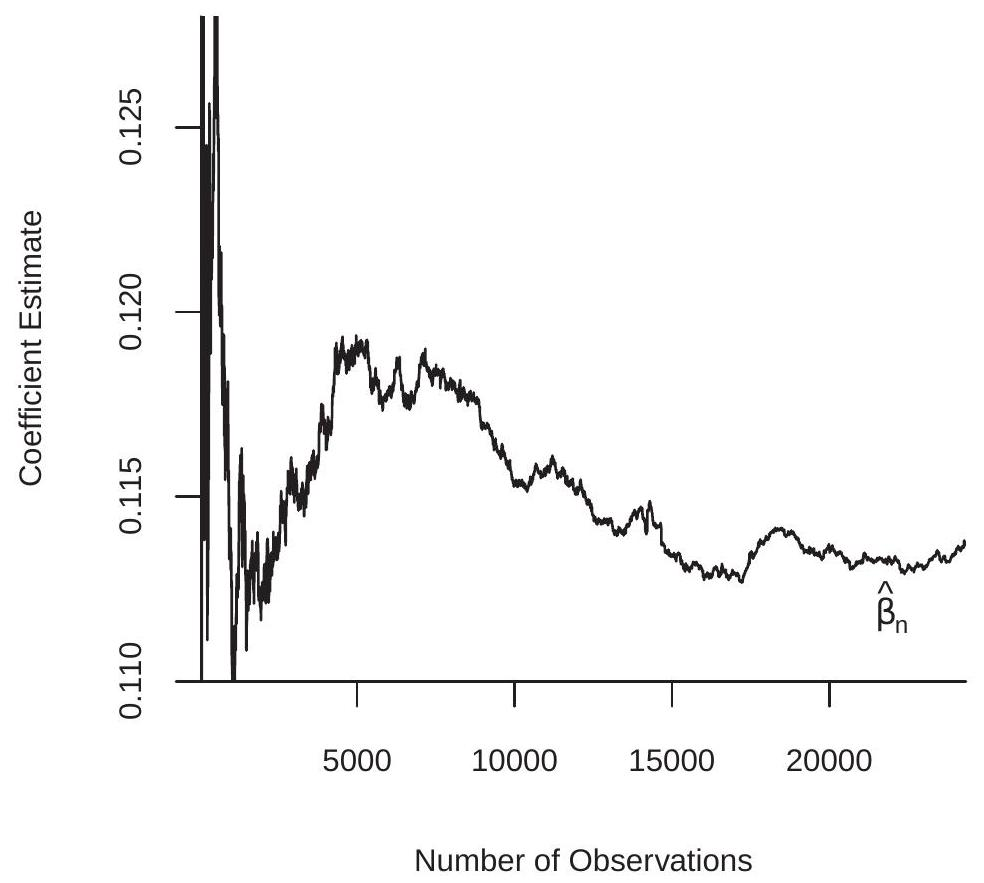
Figure 7.1: The Least-Squares Estimator as a Function of Sample Size
7.3 Asymptotic Normality
We started this chapter discussing the need for an approximation to the distribution of the OLS estimator \(\widehat{\beta}\). In Section \(7.2\) we showed that \(\widehat{\beta}\) converges in probability to \(\beta\). Consistency is a good first step, but in itself does not describe the distribution of the estimator. In this section we derive an approximation typically called the asymptotic distribution.
The derivation starts by writing the estimator as a function of sample moments. One of the moments must be written as a sum of zero-mean random vectors and normalized so that the central limit theorem can be applied. The steps are as follows.
Take equation (7.3) and multiply it by \(\sqrt{n}\). This yields the expression
\[ \sqrt{n}(\widehat{\beta}-\beta)=\left(\frac{1}{n} \sum_{i=1}^{n} X_{i} X_{i}^{\prime}\right)^{-1}\left(\frac{1}{\sqrt{n}} \sum_{i=1}^{n} X_{i} e_{i}\right) \]
This shows that the normalized and centered estimator \(\sqrt{n}(\widehat{\beta}-\beta)\) is a function of the sample average \(n^{-1} \sum_{i=1}^{n} X_{i} X_{i}^{\prime}\) and the normalized sample average \(n^{-1 / 2} \sum_{i=1}^{n} X_{i} e_{i}\).
The random pairs \(\left(Y_{i}, X_{i}\right)\) are i.i.d., meaning that they are independent across \(i\) and identically distributed. Any function of \(\left(Y_{i}, X_{i}\right)\) is also i.i.d. This includes \(e_{i}=Y_{i}-X_{i}^{\prime} \beta\) and the product \(X_{i} e_{i}\). The latter is mean-zero \((\mathbb{E}[X e]=0)\) and has \(k \times k\) covariance matrix
\[ \Omega=\mathbb{E}\left[(X e)(X e)^{\prime}\right]=\mathbb{E}\left[X X^{\prime} e^{2}\right] . \]
We show below that \(\Omega\) has finite elements under a strengthening of Assumption 7.1. Since \(X_{i} e_{i}\) is i.i.d., mean zero, and finite variance, the central limit theorem (Theorem 6.3) implies
\[ \frac{1}{\sqrt{n}} \sum_{i=1}^{n} X_{i} e_{i} \underset{d}{\longrightarrow} \mathrm{N}(0, \Omega) \]
We state the required conditions here.
Assumption 7.2
The variables \(\left(Y_{i}, X_{\boldsymbol{i}}\right), i=1, \ldots, n\), are i.i.d..
\(\mathbb{E}\left[Y^{4}\right]<\infty\).
\(\mathbb{E}\|X\|^{4}<\infty\).
\(\boldsymbol{Q}_{X X}=\mathbb{E}\left[X X^{\prime}\right]\) is positive definite.
Assumption \(7.2\) implies that \(\Omega<\infty\). To see this, take its \(j \ell^{t h}\) element, \(\mathbb{E}\left[X_{j} X_{\ell} e^{2}\right]\). Theorem 2.9.6 shows that \(\mathbb{E}\left[e^{4}\right]<\infty\). By the expectation inequality (B.30), the \(j \ell^{t h}\) element of \(\Omega\) is bounded by
\[ \left|\mathbb{E}\left[X_{j} X_{\ell} e^{2}\right]\right| \leq \mathbb{E}\left|X_{j} X_{\ell} e^{2}\right|=\mathbb{E}\left[\left|X_{j}\right|\left|X_{\ell}\right| e^{2}\right] . \]
By two applications of the Cauchy-Schwarz inequality (B.32), this is smaller than
\[ \left(\mathbb{E}\left[X_{j}^{2} X_{\ell}^{2}\right]\right)^{1 / 2}\left(\mathbb{E}\left[e^{4}\right]\right)^{1 / 2} \leq\left(\mathbb{E}\left[X_{j}^{4}\right]\right)^{1 / 4}\left(\mathbb{E}\left[X_{\ell}^{4}\right]\right)^{1 / 4}\left(\mathbb{E}\left[e^{4}\right]\right)^{1 / 2}<\infty \]
where the finiteness holds under Assumption 7.2.2 and 7.2.3. Thus \(\Omega<\infty\).
An alternative way to show that the elements of \(\Omega\) are finite is by using a matrix norm \(\|\cdot\|\) (See Appendix A.23). Then by the expectation inequality, the Cauchy-Schwarz inequality, Assumption 7.2.3, and \(\mathbb{E}\left[e^{4}\right]<\infty\),
\[ \|\Omega\| \leq \mathbb{E}\left\|X X^{\prime} e^{2}\right\|=\mathbb{E}\left[\|X\|^{2} e^{2}\right] \leq\left(\mathbb{E}\|X\|^{4}\right)^{1 / 2}\left(\mathbb{E}\left[e^{4}\right]\right)^{1 / 2}<\infty . \]
This is a more compact argument (often described as more elegant) but such manipulations should not be done without understanding the notation and the applicability of each step of the argument.
Regardless, the finiteness of the covariance matrix means that we can apply the multivariate CLT (Theorem 6.3).
Theorem 7.2 Assumption \(7.2\) implies that
\[ \Omega<\infty \]
and
\[ \frac{1}{\sqrt{n}} \sum_{i=1}^{n} X_{i} e_{i} \underset{d}{\longrightarrow} \mathrm{N}(0, \Omega) \]
as \(n \rightarrow \infty\)
Putting together (7.1), (7.5), and (7.7),
\[ \sqrt{n}(\widehat{\beta}-\beta) \underset{d}{\longrightarrow} \boldsymbol{Q}_{X X}^{-1} \mathrm{~N}(0, \Omega)=\mathrm{N}\left(0, \boldsymbol{Q}_{X X}^{-1} \Omega \boldsymbol{Q}_{X X}^{-1}\right) \]
as \(n \rightarrow \infty\). The final equality follows from the property that linear combinations of normal vectors are also normal (Theorem 5.2).
We have derived the asymptotic normal approximation to the distribution of the least squares estimator.
Theorem 7.3 Asymptotic Normality of Least Squares Estimator Under Assumption 7.2, as \(n \rightarrow \infty\)
\[ \sqrt{n}(\widehat{\beta}-\beta) \underset{d}{\longrightarrow} \mathrm{N}\left(0, \boldsymbol{V}_{\beta}\right) \]
where \(\boldsymbol{Q}_{X X}=\mathbb{E}\left[X X^{\prime}\right], \Omega=\mathbb{E}\left[X X^{\prime} e^{2}\right]\), and
\[ \boldsymbol{V}_{\beta}=\boldsymbol{Q}_{X X}^{-1} \Omega \boldsymbol{Q}_{X X}^{-1} . \]
In the stochastic order notation, Theorem \(7.3\) implies that \(\widehat{\beta}=\beta+O_{p}\left(n^{-1 / 2}\right)\) which is stronger than (7.4).
The matrix \(\boldsymbol{V}_{\beta}=\boldsymbol{Q}_{X X}^{-1} \Omega \boldsymbol{Q}_{X X}^{-1}\) is the variance of the asymptotic distribution of \(\sqrt{n}(\widehat{\beta}-\beta)\). Consequently, \(\boldsymbol{V}_{\beta}\) is often referred to as the asymptotic covariance matrix of \(\widehat{\beta}\). The expression \(\boldsymbol{V}_{\beta}=\boldsymbol{Q}_{X X}^{-1} \Omega \boldsymbol{Q}_{X X}^{-1}\) is called a sandwich form as the matrix \(\Omega\) is sandwiched between two copies of \(\boldsymbol{Q}_{X X}^{-1}\). It is useful to compare the variance of the asymptotic distribution given in (7.8) and the finite-sample conditional variance in the CEF model as given in (4.10):
\[ \boldsymbol{V}_{\widehat{\beta}}=\operatorname{var}[\widehat{\beta} \mid \boldsymbol{X}]=\left(\boldsymbol{X}^{\prime} \boldsymbol{X}\right)^{-1}\left(\boldsymbol{X}^{\prime} \boldsymbol{D} \boldsymbol{X}\right)\left(\boldsymbol{X}^{\prime} \boldsymbol{X}\right)^{-1} . \]
Notice that \(\boldsymbol{V}_{\widehat{\beta}}\) is the exact conditional variance of \(\widehat{\beta}\) and \(\boldsymbol{V}_{\beta}\) is the asymptotic variance of \(\sqrt{n}(\widehat{\beta}-\beta)\). Thus \(\boldsymbol{V}_{\beta}\) should be (roughly) \(n\) times as large as \(\boldsymbol{V}_{\widehat{\beta}}\), or \(\boldsymbol{V}_{\beta} \approx n \boldsymbol{V}_{\widehat{\beta}}\). Indeed, multiplying (7.9) by \(n\) and distributing we find
\[ n \boldsymbol{V}_{\widehat{\beta}}=\left(\frac{1}{n} \boldsymbol{X}^{\prime} \boldsymbol{X}\right)^{-1}\left(\frac{1}{n} \boldsymbol{X}^{\prime} \boldsymbol{D} \boldsymbol{X}\right)\left(\frac{1}{n} \boldsymbol{X}^{\prime} \boldsymbol{X}\right)^{-1} \]
which looks like an estimator of \(\boldsymbol{V}_{\beta}\). Indeed, as \(n \rightarrow \infty, n \boldsymbol{V}_{\widehat{\beta}} \underset{p}{\rightarrow} \boldsymbol{V}_{\beta}\). The expression \(\boldsymbol{V}_{\widehat{\beta}}\) is useful for practical inference (such as computation of standard errors and tests) as it is the variance of the estimator \(\widehat{\beta}\), while \(V_{\beta}\) is useful for asymptotic theory as it is well defined in the limit as \(n\) goes to infinity. We will make use of both symbols and it will be advisable to adhere to this convention.
There is a special case where \(\Omega\) and \(\boldsymbol{V}_{\beta}\) simplify. Suppose that
\[ \operatorname{cov}\left(X X^{\prime}, e^{2}\right)=0 . \]
Condition (7.10) holds in the homoskedastic linear regression model but is somewhat broader. Under (7.10) the asymptotic variance formulae simplify as
\[ \begin{aligned} \Omega &=\mathbb{E}\left[X X^{\prime}\right] \mathbb{E}\left[e^{2}\right]=\boldsymbol{Q}_{X X} \sigma^{2} \\ \boldsymbol{V}_{\beta} &=\boldsymbol{Q}_{X X}^{-1} \Omega \boldsymbol{Q}_{X X}^{-1}=\boldsymbol{Q}_{X X}^{-1} \sigma^{2} \equiv \boldsymbol{V}_{\beta}^{0} . \end{aligned} \]
In (7.11) we define \(\boldsymbol{V}_{\beta}^{0}=\boldsymbol{Q}_{X X}^{-1} \sigma^{2}\) whether (7.10) is true or false. When (7.10) is true then \(\boldsymbol{V}_{\beta}=\boldsymbol{V}_{\beta}^{0}\), otherwise \(\boldsymbol{V}_{\beta} \neq \boldsymbol{V}_{\beta}^{0}\). We call \(\boldsymbol{V}_{\beta}^{0}\) the homoskedastic asymptotic covariance matrix.
Theorem \(7.3\) states that the sampling distribution of the least squares estimator, after rescaling, is approximately normal when the sample size \(n\) is sufficiently large. This holds true for all joint distributions of \((Y, X)\) which satisfy the conditions of Assumption 7.2. Consequently, asymptotic normality is routinely used to approximate the finite sample distribution of \(\sqrt{n}(\widehat{\beta}-\beta)\).
A difficulty is that for any fixed \(n\) the sampling distribution of \(\widehat{\beta}\) can be arbitrarily far from the normal distribution. The normal approximation improves as \(n\) increases, but how large should \(n\) be in order for the approximation to be useful? Unfortunately, there is no simple answer to this reasonable question. The trouble is that no matter how large is the sample size, the normal approximation is arbitrarily poor for some data distribution satisfying the assumptions. We illustrate this problem using a simulation. Let \(Y=\beta_{1} X+\beta_{2}+e\) where \(X\) is \(\mathrm{N}(0,1)\) and \(e\) is independent of \(X\) with the Double Pareto density \(f(e)=\frac{\alpha}{2}|e|^{-\alpha-1},|e| \geq 1\). If \(\alpha>2\) the error \(e\) has zero mean and variance \(\alpha /(\alpha-2)\). As \(\alpha\) approaches 2 , however, its variance diverges to infinity. In this context the normalized least squares slope estimator \(\sqrt{n \frac{\alpha-2}{\alpha}}\left(\widehat{\beta}_{1}-\beta_{1}\right)\) has the \(\mathrm{N}(0,1)\) asymptotic distribution for any \(\alpha>2\). In Figure \(7.2(\) a) we display the finite sample densities of the normalized estimator \(\sqrt{n \frac{\alpha-2}{\alpha}}\left(\widehat{\beta}_{1}-\beta_{1}\right)\), setting \(n=100\) and varying the parameter \(\alpha\). For \(\alpha=3.0\) the density is very close to the \(\mathrm{N}(0,1)\) density. As \(\alpha\) diminishes the density changes significantly, concentrating most of the probability mass around zero.
Another example is shown in Figure 7.2(b). Here the model is \(Y=\beta+e\) where
\[ e=\frac{u^{r}-\mathbb{E}\left[u^{r}\right]}{\left(\mathbb{E}\left[u^{2 r}\right]-\left(\mathbb{E}\left[u^{r}\right]\right)^{2}\right)^{1 / 2}} \]
and \(u \sim \mathrm{N}(0,1)\). We show the sampling distribution of \(\sqrt{n}(\widehat{\beta}-\beta)\) for \(n=100\), varying \(r=1,4,6\) and 8 . As \(r\) increases, the sampling distribution becomes highly skewed and non-normal. The lesson from Figure \(7.2\) is that the \(\mathrm{N}(0,1)\) asymptotic approximation is never guaranteed to be accurate.
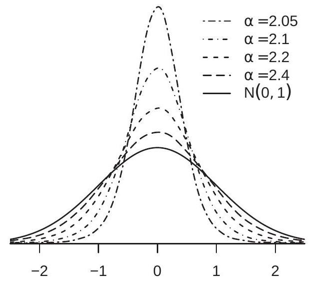
- Double Pareto Error
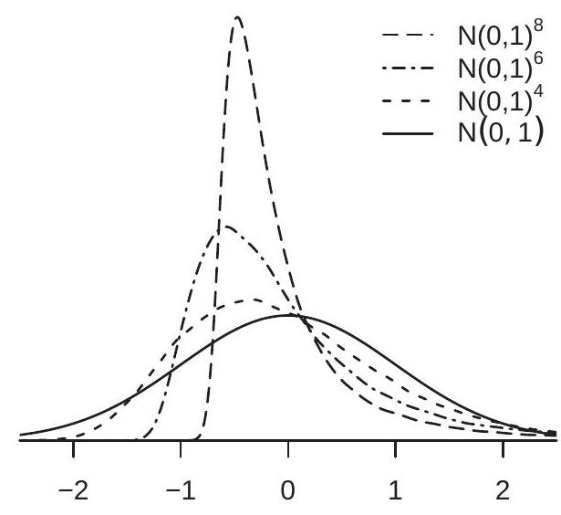
- Error Process (7.12)
Figure 7.2: Density of Normalized OLS Estimator
7.4 Joint Distribution
Theorem \(7.3\) gives the joint asymptotic distribution of the coefficient estimators. We can use the result to study the covariance between the coefficient estimators. For simplicity, take the case of two regressors, no intercept, and homoskedastic error. Assume the regressors are mean zero, variance one, with correlation \(\rho\). Then using the formula for inversion of a \(2 \times 2\) matrix,
\[ \boldsymbol{V}_{\beta}^{0}=\sigma^{2} \boldsymbol{Q}_{X X}^{-1}=\frac{\sigma^{2}}{1-\rho^{2}}\left[\begin{array}{cc} 1 & -\rho \\ -\rho & 1 \end{array}\right] . \]
Thus if \(X_{1}\) and \(X_{2}\) are positively correlated \((\rho>0)\) then \(\widehat{\beta}_{1}\) and \(\widehat{\beta}_{2}\) are negatively correlated (and viceversa).
For illustration, Figure 7.3(a) displays the probability contours of the joint asymptotic distribution of \(\widehat{\beta}_{1}-\beta_{1}\) and \(\widehat{\beta}_{2}-\beta_{2}\) when \(\beta_{1}=\beta_{2}=0\) and \(\rho=0.5\). The coefficient estimators are negatively correlated because the regressors are positively correlated. This means that if \(\widehat{\beta}_{1}\) is unusually negative, it is likely that \(\widehat{\beta}_{2}\) is unusually positive, or conversely. It is also unlikely that we will observe both \(\widehat{\beta}_{1}\) and \(\widehat{\beta}_{2}\) unusually large and of the same sign.
This finding that the correlation of the regressors is of opposite sign of the correlation of the coefficient estimates is sensitive to the assumption of homoskedasticity. If the errors are heteroskedastic then this relationship is not guaranteed.
This can be seen through a simple constructed example. Suppose that \(X_{1}\) and \(X_{2}\) only take the values \(\{-1,+1\}\), symmetrically, with \(\mathbb{P}\left[X_{1}=X_{2}=1\right]=\mathbb{P}\left[X_{1}=X_{2}=-1\right]=3 / 8\), and \(\mathbb{P}\left[X_{1}=1, X_{2}=-1\right]=\) \(\mathbb{P}\left[X_{1}=-1, X_{2}=1\right]=1 / 8\). You can check that the regressors are mean zero, unit variance and correlation \(0.5\), which is identical with the setting displayed in Figure 7.3(a).
Now suppose that the error is heteroskedastic. Specifically, suppose that \(\mathbb{E}\left[e^{2} \mid X_{1}=X_{2}\right]=5 / 4\) and \(\mathbb{E}\left[e^{2} \mid X_{1} \neq X_{2}\right]=1 / 4\). You can check that \(\mathbb{E}\left[e^{2}\right]=1\), \(\mathbb{E}\left[X_{1}^{2} e^{2}\right]=\mathbb{E}\left[X_{2}^{2} e^{2}\right]=1\) and \(\mathbb{E}\left[X_{1} X_{2} e_{i}^{2}\right]=7 / 8\). There-
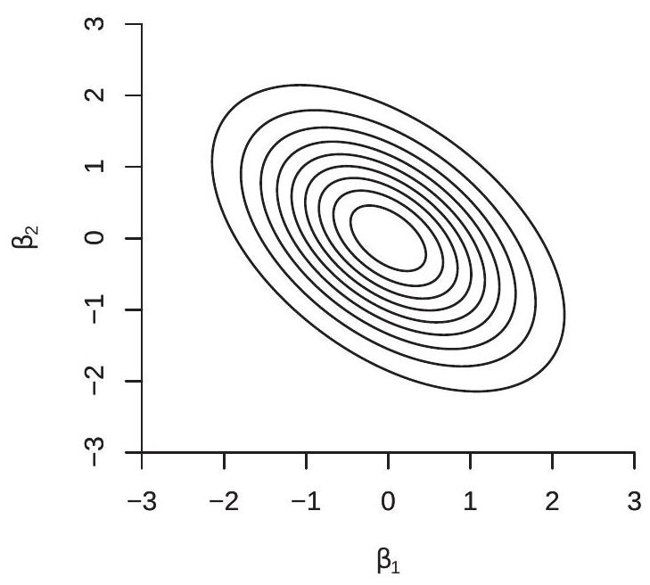
- Homoskedastic Case
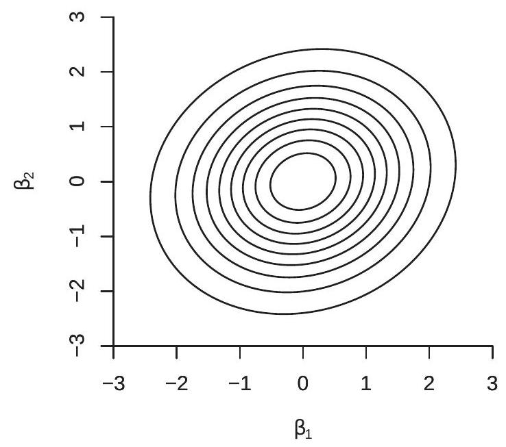
- Heteroskedastic Case
Figure 7.3: Contours of Joint Distribution of \(\widehat{\beta}_{1}\) and \(\widehat{\beta}_{2}\)
fore
\[ \begin{aligned} \boldsymbol{V}_{\beta} &=\boldsymbol{Q}_{X X}^{-1} \Omega \boldsymbol{Q}_{X X}^{-1} \\ &=\frac{9}{16}\left[\begin{array}{cc} 1 & -\frac{1}{2} \\ -\frac{1}{2} & 1 \end{array}\right]\left[\begin{array}{cc} 1 & \frac{7}{8} \\ \frac{7}{8} & 1 \end{array}\right]\left[\begin{array}{cc} 1 & -\frac{1}{2} \\ -\frac{1}{2} & 1 \end{array}\right] \\ &=\frac{4}{3}\left[\begin{array}{cc} 1 & \frac{1}{4} \\ \frac{1}{4} & 1 \end{array}\right] \end{aligned} \]
Thus the coefficient estimators \(\widehat{\beta}_{1}\) and \(\widehat{\beta}_{2}\) are positively correlated (their correlation is \(1 / 4\).) The joint probability contours of their asymptotic distribution is displayed in Figure 7.3(b). We can see how the two estimators are positively associated.
What we found through this example is that in the presence of heteroskedasticity there is no simple relationship between the correlation of the regressors and the correlation of the parameter estimators.
We can extend the above analysis to study the covariance between coefficient sub-vectors. For example, partitioning \(X^{\prime}=\left(X_{1}^{\prime}, X_{2}^{\prime}\right)\) and \(\beta^{\prime}=\left(\beta_{1}^{\prime}, \beta_{2}^{\prime}\right)\), we can write the general model as
\[ Y=X_{1}^{\prime} \beta_{1}+X_{2}^{\prime} \beta_{2}+e \]
and the coefficient estimates as \(\widehat{\beta}^{\prime}=\left(\widehat{\beta}_{1}^{\prime}, \widehat{\beta}_{2}^{\prime}\right)\). Make the partitions
\[ \boldsymbol{Q}_{X X}=\left[\begin{array}{ll} \boldsymbol{Q}_{11} & \boldsymbol{Q}_{12} \\ \boldsymbol{Q}_{21} & \boldsymbol{Q}_{22} \end{array}\right], \quad \Omega=\left[\begin{array}{ll} \Omega_{11} & \Omega_{12} \\ \Omega_{21} & \Omega_{22} \end{array}\right] . \]
From (2.43)
\[ \boldsymbol{Q}_{X X}^{-1}=\left[\begin{array}{cc} \boldsymbol{Q}_{11 \cdot 2}^{-1} & -\boldsymbol{Q}_{11 \cdot 2}^{-1} \boldsymbol{Q}_{12} \boldsymbol{Q}_{22}^{-1} \\ -\boldsymbol{Q}_{22 \cdot 1}^{-1} \boldsymbol{Q}_{21} \boldsymbol{Q}_{11}^{-1} & \boldsymbol{Q}_{22 \cdot 1}^{-1} \end{array}\right] \]
where \(\boldsymbol{Q}_{11 \cdot 2}=\boldsymbol{Q}_{11}-\boldsymbol{Q}_{12} \boldsymbol{Q}_{22}^{-1} \boldsymbol{Q}_{21}\) and \(\boldsymbol{Q}_{22 \cdot 1}=\boldsymbol{Q}_{22}-\boldsymbol{Q}_{21} \boldsymbol{Q}_{11}^{-1} \boldsymbol{Q}_{12}\). Thus when the error is homoskedastic
\[ \operatorname{cov}\left(\widehat{\beta}_{1}, \widehat{\beta}_{2}\right)=-\sigma^{2} \boldsymbol{Q}_{11 \cdot 2}^{-1} \boldsymbol{Q}_{12} \boldsymbol{Q}_{22}^{-1} \]
which is a matrix generalization of the two-regressor case.
In general you can show that (Exercise 7.5)
\[ \boldsymbol{V}_{\boldsymbol{\beta}}=\left[\begin{array}{ll} \boldsymbol{V}_{11} & \boldsymbol{V}_{12} \\ \boldsymbol{V}_{21} & \boldsymbol{V}_{22} \end{array}\right] \]
where
\[ \begin{aligned} \boldsymbol{V}_{11} &=\boldsymbol{Q}_{11 \cdot 2}^{-1}\left(\Omega_{11}-\boldsymbol{Q}_{12} \boldsymbol{Q}_{22}^{-1} \Omega_{21}-\Omega_{12} \boldsymbol{Q}_{22}^{-1} \boldsymbol{Q}_{21}+\boldsymbol{Q}_{12} \boldsymbol{Q}_{22}^{-1} \Omega_{22} \boldsymbol{Q}_{22}^{-1} \boldsymbol{Q}_{21}\right) \boldsymbol{Q}_{11 \cdot 2}^{-1} \\ \boldsymbol{V}_{21} &=\boldsymbol{Q}_{22 \cdot 1}^{-1}\left(\Omega_{21}-\boldsymbol{Q}_{21} \boldsymbol{Q}_{11}^{-1} \Omega_{11}-\Omega_{22} \boldsymbol{Q}_{22}^{-1} \boldsymbol{Q}_{21}+\boldsymbol{Q}_{21} \boldsymbol{Q}_{11}^{-1} \Omega_{12} \boldsymbol{Q}_{22}^{-1} \boldsymbol{Q}_{21}\right) \boldsymbol{Q}_{11 \cdot 2}^{-1} \\ \boldsymbol{V}_{22} &=\boldsymbol{Q}_{22 \cdot 1}^{-1}\left(\Omega_{22}-\boldsymbol{Q}_{21} \boldsymbol{Q}_{11}^{-1} \Omega_{12}-\Omega_{21} \boldsymbol{Q}_{11}^{-1} \boldsymbol{Q}_{12}+\boldsymbol{Q}_{21} \boldsymbol{Q}_{11}^{-1} \Omega_{11} \boldsymbol{Q}_{11}^{-1} \boldsymbol{Q}_{12}\right) \boldsymbol{Q}_{22 \cdot 1}^{-1} \end{aligned} \]
Unfortunately, these expressions are not easily interpretable.
7.5 Consistency of Error Variance Estimators
Using the methods of Section \(7.2\) we can show that the estimators \(\widehat{\sigma}^{2}=n^{-1} \sum_{i=1}^{n} \widehat{e}_{i}^{2}\) and \(s^{2}=(n-k)^{-1} \sum_{i=1}^{n} \widehat{e}_{i}^{2}\) are consistent for \(\sigma^{2}\).
The trick is to write the residual \(\widehat{e}_{i}\) as equal to the error \(e_{i}\) plus a deviation
\[ \widehat{e}_{i}=Y_{i}-X_{i}^{\prime} \widehat{\beta}=e_{i}-X_{i}^{\prime}(\widehat{\beta}-\beta) . \]
Thus the squared residual equals the squared error plus a deviation
\[ \widehat{e}_{i}^{2}=e_{i}^{2}-2 e_{i} X_{i}^{\prime}(\widehat{\beta}-\beta)+(\widehat{\beta}-\beta)^{\prime} X_{i} X_{i}^{\prime}(\widehat{\beta}-\beta) . \]
So when we take the average of the squared residuals we obtain the average of the squared errors, plus two terms which are (hopefully) asymptotically negligible. This average is:
\[ \widehat{\sigma}^{2}=\frac{1}{n} \sum_{i=1}^{n} e_{i}^{2}-2\left(\frac{1}{n} \sum_{i=1}^{n} e_{i} X_{i}^{\prime}\right)(\widehat{\beta}-\beta)+(\widehat{\beta}-\beta)^{\prime}\left(\frac{1}{n} \sum_{i=1}^{n} X_{i} X_{i}^{\prime}\right)(\widehat{\beta}-\beta) . \]
The WLLN implies that
\[ \begin{aligned} &\frac{1}{n} \sum_{i=1}^{n} e_{i}^{2} \underset{p}{\longrightarrow} \sigma^{2} \\ &\frac{1}{n} \sum_{i=1}^{n} e_{i} X_{i}^{\prime} \underset{p}{\longrightarrow} \mathbb{E}\left[e X^{\prime}\right]=0 \\ &\frac{1}{n} \sum_{i=1}^{n} X_{i} X_{i}^{\prime} \underset{p}{\longrightarrow}\left[X X^{\prime}\right]=\boldsymbol{Q}_{X X} \end{aligned} \]
Theorem \(7.1\) shows that \(\widehat{\beta} \underset{p}{\rightarrow} \beta\). Hence (7.18) converges in probability to \(\sigma^{2}\) as desired.
Finally, since \(n /(n-k) \rightarrow 1\) as \(n \rightarrow \infty\) it follows that \(s^{2}=\left(\frac{n}{n-k}\right) \widehat{\sigma}^{2} \underset{p}{\rightarrow} \sigma^{2}\). Thus both estimators are consistent. Theorem 7.4 Under Assumption 7.1, \(\widehat{\sigma}^{2} \underset{p}{\longrightarrow} \sigma^{2}\) and \(s^{2} \underset{p}{\rightarrow} \sigma^{2}\) as \(n \rightarrow \infty\).
7.6 Homoskedastic Covariance Matrix Estimation
Theorem \(7.3\) shows that \(\sqrt{n}(\widehat{\beta}-\beta)\) is asymptotically normal with asymptotic covariance matrix \(\boldsymbol{V}_{\beta}\). For asymptotic inference (confidence intervals and tests) we need a consistent estimator of \(\boldsymbol{V}_{\beta}\). Under homoskedasticity \(\boldsymbol{V}_{\beta}\) simplifies to \(\boldsymbol{V}_{\beta}^{0}=\boldsymbol{Q}_{X X}^{-1} \sigma^{2}\) and in this section we consider the simplified problem of estimating \(V_{\beta}^{0}\).
The standard moment estimator of \(\boldsymbol{Q}_{X X}\) is \(\widehat{\boldsymbol{Q}}_{X X}\) defined in (7.1) and thus an estimator for \(\boldsymbol{Q}_{X X}^{-1}\) is \(\widehat{\boldsymbol{Q}}_{X X}^{-1}\). The standard estimator of \(\sigma^{2}\) is the unbiased estimator \(s^{2}\) defined in (4.31). Thus a natural plug-in estimator for \(\boldsymbol{V}_{\beta}^{0}=\boldsymbol{Q}_{X X}^{-1} \sigma^{2}\) is \(\widehat{\boldsymbol{V}}_{\beta}^{0}=\widehat{\boldsymbol{Q}}_{X X}^{-1} s^{2}\).
Consistency of \(\widehat{\boldsymbol{V}}_{\beta}^{0}\) for \(\boldsymbol{V}_{\beta}^{0}\) follows from consistency of the moment estimators \(\widehat{\boldsymbol{Q}}_{X X}\) and \(s^{2}\) and an application of the continuous mapping theorem. Specifically, Theorem \(7.1\) established \(\widehat{\boldsymbol{Q}}_{X X} \underset{p}{\rightarrow} \boldsymbol{Q}_{X X}\), and Theorem \(7.4\) established \(s^{2} \underset{p}{\rightarrow} \sigma^{2}\). The function \(\boldsymbol{V}_{\beta}^{0}=\boldsymbol{Q}_{X X}^{-1} \sigma^{2}\) is a continuous function of \(\boldsymbol{Q}_{X X}\) and \(\sigma^{2}\) so long as \(\boldsymbol{Q}_{X X}>0\), which holds true under Assumption 7.1.4. It follows by the CMT that
\[ \widehat{\boldsymbol{V}}_{\beta}^{0}=\widehat{\boldsymbol{Q}}_{X X}^{-1} s^{2} \underset{p}{\longrightarrow} \boldsymbol{Q}_{X X}^{-1} \sigma^{2}=\boldsymbol{V}_{\beta}^{0} \]
so that \(\widehat{\boldsymbol{V}}_{\beta}^{0}\) is consistent for \(\boldsymbol{V}_{\beta}^{0}\).
Theorem 7.5 Under Assumption 7.1, \(\widehat{\boldsymbol{V}}_{\beta}^{0} \underset{p}{\rightarrow} \boldsymbol{V}_{\beta}^{0}\) as \(n \rightarrow \infty\)
It is instructive to notice that Theorem \(7.5\) does not require the assumption of homoskedasticity. That is, \(\widehat{V}_{\beta}^{0}\) is consistent for \(\boldsymbol{V}_{\beta}^{0}\) regardless if the regression is homoskedastic or heteroskedastic. However, \(\boldsymbol{V}_{\beta}^{0}=\boldsymbol{V}_{\beta}=\operatorname{avar}[\widehat{\beta}]\) only under homoskedasticity. Thus, in the general case \(\widehat{\boldsymbol{V}}_{\beta}^{0}\) is consistent for a welldefined but non-useful object.
7.7 Heteroskedastic Covariance Matrix Estimation
Theorems \(7.3\) established that the asymptotic covariance matrix of \(\sqrt{n}(\widehat{\beta}-\beta)\) is \(\boldsymbol{V}_{\beta}=\boldsymbol{Q}_{X X}^{-1} \Omega \boldsymbol{Q}_{X X}^{-1}\). We now consider estimation of this covariance matrix without imposing homoskedasticity. The standard approach is to use a plug-in estimator which replaces the unknowns with sample moments.
As described in the previous section a natural estimator for \(\boldsymbol{Q}_{X X}^{-1}\) is \(\widehat{\boldsymbol{Q}}_{X X}^{-1}\) where \(\widehat{\boldsymbol{Q}}_{X X}\) defined in (7.1). The moment estimator for \(\Omega\) is
\[ \widehat{\Omega}=\frac{1}{n} \sum_{i=1}^{n} X_{i} X_{i}^{\prime} \widehat{e}_{i}^{2}, \]
leading to the plug-in covariance matrix estimator
\[ \widehat{\boldsymbol{V}}_{\beta}^{\mathrm{HC} 0}=\widehat{\boldsymbol{Q}}_{X X}^{-1} \widehat{\Omega} \widehat{\boldsymbol{Q}}_{X X}^{-1} . \]
You can check that \(\widehat{\boldsymbol{V}}_{\beta}^{\mathrm{HC} 0}=n \widehat{\boldsymbol{V}}_{\widehat{\beta}}^{\mathrm{HC} 0}\) where \(\widehat{\boldsymbol{V}}_{\widehat{\beta}}^{\mathrm{HC} 0}\) is the HC0 covariance matrix estimator from (4.36).
As shown in Theorem 7.1, \(\widehat{\boldsymbol{Q}}_{X X}^{-1} \underset{p}{\rightarrow} \boldsymbol{Q}_{X X}^{-1}\), so we just need to verify the consistency of \(\widehat{\Omega}\). The key is to replace the squared residual \(\widehat{e}_{i}^{2}\) with the squared error \(e_{i}^{2}\), and then show that the difference is asymptotically negligible.
Specifically, observe that
\[ \begin{aligned} \widehat{\Omega} &=\frac{1}{n} \sum_{i=1}^{n} X_{i} X_{i}^{\prime} \widehat{e}_{i}^{2} \\ &=\frac{1}{n} \sum_{i=1}^{n} X_{i} X_{i}^{\prime} e_{i}^{2}+\frac{1}{n} \sum_{i=1}^{n} X_{i} X_{i}^{\prime}\left(\widehat{e}_{i}^{2}-e_{i}^{2}\right) . \end{aligned} \]
The first term is an average of the i.i.d. random variables \(X_{i} X_{i}^{\prime} e_{i}^{2}\), and therefore by the WLLN converges in probability to its expectation, namely,
\[ \frac{1}{n} \sum_{i=1}^{n} X_{i} X_{i}^{\prime} e_{i}^{2} \underset{p}{\longrightarrow}\left[X X^{\prime} e^{2}\right]=\Omega . \]
Technically, this requires that \(\Omega\) has finite elements, which was shown in (7.6).
To establish that \(\widehat{\Omega}\) is consistent for \(\Omega\) it remains to show that
\[ \frac{1}{n} \sum_{i=1}^{n} X_{i} X_{i}^{\prime}\left(\widehat{e}_{i}^{2}-e_{i}^{2}\right) \underset{p}{\longrightarrow} 0 \]
There are multiple ways to do this. A reasonably straightforward yet slightly tedious derivation is to start by applying the triangle inequality (B.16) using a matrix norm:
\[ \begin{aligned} \left\|\frac{1}{n} \sum_{i=1}^{n} X_{i} X_{i}^{\prime}\left(\widehat{e}_{i}^{2}-e_{i}^{2}\right)\right\| & \leq \frac{1}{n} \sum_{i=1}^{n}\left\|X_{i} X_{i}^{\prime}\left(\widehat{e}_{i}^{2}-e_{i}^{2}\right)\right\| \\ &=\frac{1}{n} \sum_{i=1}^{n}\left\|X_{i}\right\|^{2}\left|\widehat{e}_{i}^{2}-e_{i}^{2}\right| . \end{aligned} \]
Then recalling the expression for the squared residual (7.17), apply the triangle inequality (B.1) and then the Schwarz inequality (B.12) twice
\[ \begin{aligned} \left|\widehat{e}_{i}^{2}-e_{i}^{2}\right| & \leq 2\left|e_{i} X_{i}^{\prime}(\widehat{\beta}-\beta)\right|+(\widehat{\beta}-\beta)^{\prime} X_{i} X_{i}^{\prime}(\widehat{\beta}-\beta) \\ &=2\left|e_{i}\right|\left|X_{i}^{\prime}(\widehat{\beta}-\beta)\right|+\left|(\widehat{\beta}-\beta)^{\prime} X_{i}\right|^{2} \\ & \leq 2\left|e_{i}\right|\left\|X_{i}\right\|\|\widehat{\beta}-\beta\|+\left\|X_{i}\right\|^{2}\|\widehat{\beta}-\beta\|^{2} \end{aligned} \]
Combining (7.21) and (7.22), we find
\[ \begin{aligned} \left\|\frac{1}{n} \sum_{i=1}^{n} X_{i} X_{i}^{\prime}\left(\widehat{e}_{i}^{2}-e_{i}^{2}\right)\right\| & \leq 2\left(\frac{1}{n} \sum_{i=1}^{n}\left\|X_{i}\right\|^{3}\left|e_{i}\right|\right)\|\widehat{\beta}-\beta\|+\left(\frac{1}{n} \sum_{i=1}^{n}\left\|X_{i}\right\|^{4}\right)\|\widehat{\beta}-\beta\|^{2} \\ &=o_{p}(1) . \end{aligned} \]
The expression is \(o_{p}(1)\) because \(\|\widehat{\beta}-\beta\| \underset{p}{\longrightarrow} 0\) and both averages in parenthesis are averages of random variables with finite expectation under Assumption \(7.2\) (and are thus \(O_{p}(1)\) ). Indeed, by Hölder’s inequality (B.31)
\[ \mathbb{E}\left[\|X\|^{3}|e|\right] \leq\left(\mathbb{E}\left[\left(\|X\|^{3}\right)^{4 / 3}\right]\right)^{3 / 4}\left(\mathbb{E}\left[e^{4}\right]\right)^{1 / 4}=\left(\mathbb{E}\|X\|^{4}\right)^{3 / 4}\left(\mathbb{E}\left[e^{4}\right]\right)^{1 / 4}<\infty . \]
We have established (7.20) as desired. Theorem 7.6 Under Assumption 7.2, as \(n \rightarrow \infty, \widehat{\Omega} \underset{p}{\longrightarrow} \Omega\) and \(\widehat{\boldsymbol{V}}_{\beta}^{\mathrm{HC} 0} \underset{p}{\longrightarrow} \boldsymbol{V}_{\beta}\)
For an alternative proof of this result, see Section 7.20.
7.8 Summary of Covariance Matrix Notation
The notation we have introduced may be somewhat confusing so it is helpful to write it down in one place.
The exact variance of \(\widehat{\beta}\) (under the assumptions of the linear regression model) and the asymptotic variance of \(\sqrt{n}(\widehat{\beta}-\beta)\) (under the more general assumptions of the linear projection model) are
\[ \begin{aligned} &\boldsymbol{V}_{\widehat{\beta}}=\operatorname{var}[\widehat{\beta} \mid \boldsymbol{X}]=\left(\boldsymbol{X}^{\prime} \boldsymbol{X}\right)^{-1}\left(\boldsymbol{X}^{\prime} \boldsymbol{D} \boldsymbol{X}\right)\left(\boldsymbol{X}^{\prime} \boldsymbol{X}\right)^{-1} \\ &\boldsymbol{V}_{\beta}=\operatorname{avar}[\sqrt{n}(\widehat{\beta}-\beta)]=\boldsymbol{Q}_{X X}^{-1} \Omega \boldsymbol{Q}_{X X}^{-1} \end{aligned} \]
The HC0 estimators of these two covariance matrices are
\[ \begin{aligned} \widehat{\boldsymbol{V}}_{\widehat{\beta}}^{\mathrm{HC} 0} &=\left(\boldsymbol{X}^{\prime} \boldsymbol{X}\right)^{-1}\left(\sum_{i=1}^{n} X_{i} X_{i}^{\prime} \widehat{e}_{i}^{2}\right)\left(\boldsymbol{X}^{\prime} \boldsymbol{X}\right)^{-1} \\ \widehat{\boldsymbol{V}}_{\beta}^{\mathrm{HC} 0} &=\widehat{\boldsymbol{Q}}_{X X}^{-1} \widehat{\Omega} \widehat{\boldsymbol{Q}}_{X X}^{-1} \end{aligned} \]
and satisfy the simple relationship \(\widehat{\boldsymbol{V}}_{\beta}^{\mathrm{HC} 0}=n \widehat{\boldsymbol{V}}_{\widehat{\beta}}^{\mathrm{HC}}\).
Similarly, under the assumption of homoskedasticity the exact and asymptotic variances simplify to
\[ \begin{aligned} \boldsymbol{V}_{\widehat{\beta}}^{0} &=\left(\boldsymbol{X}^{\prime} \boldsymbol{X}\right)^{-1} \sigma^{2} \\ \boldsymbol{V}_{\beta}^{0} &=\boldsymbol{Q}_{X X}^{-1} \sigma^{2} . \end{aligned} \]
Their standard estimators are
\[ \begin{aligned} \widehat{\boldsymbol{V}}_{\widehat{\beta}}^{0} &=\left(\boldsymbol{X}^{\prime} \boldsymbol{X}\right)^{-1} s^{2} \\ \widehat{\boldsymbol{V}}_{\beta}^{0} &=\widehat{\boldsymbol{Q}}_{X X}^{-1} s^{2} \end{aligned} \]
which also satisfy the relationship \(\widehat{\boldsymbol{V}}_{\beta}^{0}=n \widehat{\boldsymbol{V}}_{\widehat{\beta}}^{0}\).
The exact formula and estimators are useful when constructing test statistics and standard errors. However, for theoretical purposes the asymptotic formula (variances and their estimates) are more useful as these retain non-generate limits as the sample sizes diverge. That is why both sets of notation are useful.
7.9 Alternative Covariance Matrix Estimators*
In Section \(7.7\) we introduced \(\widehat{\boldsymbol{V}}_{\beta}^{\mathrm{HC} 0}\) as an estimator of \(\boldsymbol{V}_{\beta} \cdot \widehat{\boldsymbol{V}}_{\beta}^{\mathrm{HC} 0}\) is a scaled version of \(\widehat{\boldsymbol{V}}_{\widehat{\beta}}^{\mathrm{HC} 0}\) from Section 4.14, where we also introduced the alternative HC1, HC2, and HC3 heteroskedasticity-robust covariance matrix estimators. We now discuss the consistency properties of these estimators.
To do so we introduce their scaled versions, e.g. \(\widehat{\boldsymbol{V}}_{\beta}^{\mathrm{HC} 1}=n \widehat{\boldsymbol{V}}_{\widehat{\beta}}^{\mathrm{HC} 1}, \widehat{\boldsymbol{V}}_{\beta}^{\mathrm{HC} 2}=n \widehat{\boldsymbol{V}}_{\widehat{\beta}}^{\mathrm{HC} 2}\), and \(\widehat{\boldsymbol{V}}_{\beta}^{\mathrm{HC} 3}=n \widehat{\boldsymbol{V}}_{\widehat{\beta}}^{\mathrm{HC} 3}\). These are (alternative) estimators of the asymptotic covariance matrix \(\boldsymbol{V}_{\beta}\). First, consider \(\widehat{\boldsymbol{V}}_{\beta}^{\mathrm{HC} 1}\). Notice that \(\widehat{\boldsymbol{V}}_{\beta}^{\mathrm{HC} 1}=n \widehat{\boldsymbol{V}}_{\widehat{\beta}}^{\mathrm{HC1}}=\frac{n}{n-k} \widehat{\boldsymbol{V}}_{\beta}^{\mathrm{HC} 0}\) where \(\widehat{\boldsymbol{V}}_{\beta}^{\mathrm{HC}}\) was defined in (7.19) and shown consistent for \(\boldsymbol{V}_{\beta}\) in Theorem 7.6. If \(k\) is fixed as \(n \rightarrow \infty\), then \(\frac{n}{n-k} \rightarrow 1\) and thus
\[ \widehat{\boldsymbol{V}}_{\beta}^{\mathrm{HC} 1}=(1+o(1)) \widehat{\boldsymbol{V}}_{\beta}^{\mathrm{HC} 0} \underset{p}{\longrightarrow} \boldsymbol{V}_{\beta} . \]
Thus \(\widehat{\boldsymbol{V}}_{\beta}^{\mathrm{HC} 1}\) is consistent for \(\boldsymbol{V}_{\beta}\).
The alternative estimators \(\widehat{\boldsymbol{V}}_{\beta}^{\mathrm{HC} 2}\) and \(\widehat{\boldsymbol{V}}_{\beta}^{\mathrm{HC} 3}\) take the form (7.19) but with \(\widehat{\Omega}\) replaced by
\[ \widetilde{\Omega}=\frac{1}{n} \sum_{i=1}^{n}\left(1-h_{i i}\right)^{-2} X_{i} X_{i}^{\prime} \widehat{e}_{i}^{2} \]
and
\[ \bar{\Omega}=\frac{1}{n} \sum_{i=1}^{n}\left(1-h_{i i}\right)^{-1} X_{i} X_{i}^{\prime} \hat{e}_{i}^{2}, \]
respectively. To show that these estimators also consistent for \(\boldsymbol{V}_{\beta}\) given \(\widehat{\Omega} \underset{p}{\vec{a}} \Omega\) it is sufficient to show that the differences \(\widetilde{\Omega}-\widehat{\Omega}\) and \(\bar{\Omega}-\widehat{\Omega}\) converge in probability to zero as \(n \rightarrow \infty\).
The trick is the fact that the leverage values are asymptotically negligible:
\[ h_{n}^{*}=\max _{1 \leq i \leq n} h_{i i}=o_{p}(1) . \]
(See Theorem \(7.17\) in Section 7.21.) Then using the triangle inequality (B.16)
\[ \begin{aligned} \|\bar{\Omega}-\widehat{\Omega}\| & \leq \frac{1}{n} \sum_{i=1}^{n}\left\|X_{i} X_{i}^{\prime}\right\| \widehat{e}_{i}^{2}\left|\left(1-h_{i i}\right)^{-1}-1\right| \\ & \leq\left(\frac{1}{n} \sum_{i=1}^{n}\left\|X_{i}\right\|^{2} \widehat{e}_{i}^{2}\right)\left|\left(1-h_{n}^{*}\right)^{-1}-1\right| . \end{aligned} \]
The sum in parenthesis can be shown to be \(O_{p}(1)\) under Assumption \(7.2\) by the same argument as in in the proof of Theorem 7.6. (In fact, it can be shown to converge in probability to \(\mathbb{E}\left[\|X\|^{2} e^{2}\right]\).) The term in absolute values is \(o_{p}(1)\) by (7.24). Thus the product is \(o_{p}(1)\) which means that \(\bar{\Omega}=\widehat{\Omega}+o_{p}(1) \underset{p}{\longrightarrow}\).
Similarly,
\[ \begin{aligned} \|\widetilde{\Omega}-\widehat{\Omega}\| & \leq \frac{1}{n} \sum_{i=1}^{n}\left\|X_{i} X_{i}^{\prime}\right\| \widehat{e}_{i}^{2}\left|\left(1-h_{i i}\right)^{-2}-1\right| \\ & \leq\left(\frac{1}{n} \sum_{i=1}^{n}\left\|X_{i}\right\|^{2} \widehat{e}_{i}^{2}\right)\left|\left(1-h_{n}^{*}\right)^{-2}-1\right| \\ &=o_{p}(1) . \end{aligned} \]
Theorem 7.7 Under Assumption 7.2, as \(n \rightarrow \infty, \widetilde{\Omega} \underset{p}{\longrightarrow} \Omega, \bar{\Omega} \underset{p}{\longrightarrow} \Omega, \widehat{V}_{\beta}^{\mathrm{HC1}} \underset{p}{\longrightarrow}\) \(\boldsymbol{V}_{\beta}, \widehat{\boldsymbol{V}}_{\beta}^{\mathrm{HC} 2} \underset{p}{\longrightarrow} \boldsymbol{V}_{\beta}\), and \(\widehat{\boldsymbol{V}}_{\beta}^{\mathrm{HC} 3} \underset{p}{\longrightarrow} \boldsymbol{V}_{\beta}\)
Theorem \(7.7\) shows that the alternative covariance matrix estimators are also consistent for the asymptotic covariance matrix.
To simplify notation, for the remainder of the chapter we will use the notation \(\widehat{\boldsymbol{V}}_{\beta}\) and \(\widehat{\boldsymbol{V}}_{\widehat{\beta}}\) to refer to any of the heteroskedasticity-consistent covariance matrix estimators \(\mathrm{HC}\), \(\mathrm{HC} 1\), HC2, and \(\mathrm{HC3}\), as they all have the same asymptotic limits.
7.10 Functions of Parameters
In most serious applications a researcher is actually interested in a specific transformation of the coefficient vector \(\beta=\left(\beta_{1}, \ldots, \beta_{k}\right)\). For example, the researcher may be interested in a single coefficient \(\beta_{j}\) or a ratio \(\beta_{j} / \beta_{l}\). More generally, interest may focus on a quantity such as consumer surplus which could be a complicated function of the coefficients. In any of these cases we can write the parameter of interest \(\theta\) as a function of the coefficients, e.g. \(\theta=r(\beta)\) for some function \(r: \mathbb{R}^{k} \rightarrow \mathbb{R}^{q}\). The estimate of \(\theta\) is
\[ \widehat{\theta}=r(\widehat{\beta}) . \]
By the continuous mapping theorem (Theorem 6.6) and the fact \(\widehat{\beta} \underset{p}{\longrightarrow} \beta\) we can deduce that \(\widehat{\theta}\) is consistent for \(\theta\) if the function \(r(\cdot)\) is continuous.
Theorem 7.8 Under Assumption 7.1, if \(r(\beta)\) is continuous at the true value of \(\beta\) then as \(n \rightarrow \infty, \widehat{\theta} \underset{p}{\longrightarrow} \theta\)
Furthermore, if the transformation is sufficiently smooth, by the Delta Method (Theorem 6.8) we can show that \(\widehat{\theta}\) is asymptotically normal.
Assumption 7.3 \(r(\beta): \mathbb{R}^{k} \rightarrow \mathbb{R}^{q}\) is continuously differentiable at the true value of \(\beta\) and \(\boldsymbol{R}=\frac{\partial}{\partial \beta} r(\beta)^{\prime}\) has rank \(q\).
Theorem 7.9 Asymptotic Distribution of Functions of Parameters Under Assumptions \(7.2\) and 7.3, as \(n \rightarrow \infty\),
\[ \sqrt{n}(\widehat{\theta}-\theta) \underset{d}{\longrightarrow} \mathrm{N}\left(0, \boldsymbol{V}_{\theta}\right) \]
where \(\boldsymbol{V}_{\theta}=\boldsymbol{R}^{\prime} \boldsymbol{V}_{\beta} \boldsymbol{R}\).
In many cases the function \(r(\beta)\) is linear:
\[ r(\beta)=\boldsymbol{R}^{\prime} \beta \]
for some \(k \times q\) matrix \(\boldsymbol{R}\). In particular if \(\boldsymbol{R}\) is a “selector matrix”
\[ \boldsymbol{R}=\left(\begin{array}{l} \boldsymbol{I} \\ 0 \end{array}\right) \]
then we can partition \(\beta=\left(\beta_{1}^{\prime}, \beta_{2}^{\prime}\right)^{\prime}\) so that \(\boldsymbol{R}^{\prime} \beta=\beta_{1}\). Then
\[ \boldsymbol{V}_{\boldsymbol{\theta}}=\left(\begin{array}{ll} \boldsymbol{I} & 0 \end{array}\right) \boldsymbol{V}_{\beta}\left(\begin{array}{l} \boldsymbol{I} \\ 0 \end{array}\right)=\boldsymbol{V}_{11}, \]
the upper-left sub-matrix of \(V_{11}\) given in (7.14). In this case (7.25) states that
\[ \sqrt{n}\left(\widehat{\beta}_{1}-\beta_{1}\right) \underset{d}{\longrightarrow} \mathrm{N}\left(0, V_{11}\right) . \]
That is, subsets of \(\widehat{\beta}\) are approximately normal with variances given by the conformable subcomponents of \(V\).
To illustrate the case of a nonlinear transformation take the example \(\theta=\beta_{j} / \beta_{l}\) for \(j \neq l\). Then
\[ \boldsymbol{R}=\frac{\partial}{\partial \beta} r(\beta)=\left(\begin{array}{c} \frac{\partial}{\partial \beta_{1}}\left(\beta_{j} / \beta_{l}\right) \\ \vdots \\ \frac{\partial}{\partial \beta_{j}}\left(\beta_{j} / \beta_{l}\right) \\ \vdots \\ \frac{\partial}{\partial \beta_{\ell}}\left(\beta_{j} / \beta_{l}\right) \\ \vdots \\ \frac{\partial}{\partial \beta_{k}}\left(\beta_{j} / \beta_{l}\right) \end{array}\right)=\left(\begin{array}{c} 0 \\ \vdots \\ 1 / \beta_{l} \\ \vdots \\ -\beta_{j} / \beta_{l}^{2} \\ \vdots \\ 0 \end{array}\right) \]
so
\[ \boldsymbol{V}_{\theta}=\boldsymbol{V}_{j j} / \beta_{l}^{2}+\boldsymbol{V}_{l l} \beta_{j}^{2} / \beta_{l}^{4}-2 \boldsymbol{V}_{j l} \beta_{j} / \beta_{l}^{3} \]
where \(\boldsymbol{V}_{a b}\) denotes the \(a b^{t h}\) element of \(\boldsymbol{V}_{\beta}\).
For inference we need an estimator of the asymptotic covariance matrix \(\boldsymbol{V}_{\theta}=\boldsymbol{R}^{\prime} \boldsymbol{V}_{\beta} \boldsymbol{R}\). For this it is typical to use the plug-in estimator
\[ \widehat{\boldsymbol{R}}=\frac{\partial}{\partial \beta} r(\widehat{\beta})^{\prime} . \]
The derivative in (7.27) may be calculated analytically or numerically. By analytically, we mean working out the formula for the derivative and replacing the unknowns by point estimates. For example, if \(\theta=\) \(\beta_{j} / \beta_{l}\) then \(\frac{\partial}{\partial \beta} r(\beta)\) is (7.26). However in some cases the function \(r(\beta)\) may be extremely complicated and a formula for the analytic derivative may not be easily available. In this case numerical differentiation may be preferable. Let \(\delta_{l}=(0 \cdots 1 \cdots 0)^{\prime}\) be the unit vector with the ” 1 ” in the \(l^{\text {th }}\) place. The \(j l^{t h}\) element of a numerical derivative \(\widehat{\boldsymbol{R}}\) is
for some small \(\epsilon\).
\[ \widehat{\boldsymbol{R}}_{j l}=\frac{r_{j}\left(\widehat{\beta}+\delta_{l} \epsilon\right)-r_{j}(\widehat{\beta})}{\epsilon} \]
The estimator of \(\boldsymbol{V}_{\theta}\) is
\[ \widehat{\boldsymbol{V}}_{\theta}=\widehat{\boldsymbol{R}}^{\prime} \widehat{\boldsymbol{V}}_{\beta} \widehat{\boldsymbol{R}} \text {. } \]
Alternatively, the homoskedastic covariance matrix estimator could be used leading to a homoskedastic covariance matrix estimator for \(\theta\).
\[ \widehat{\boldsymbol{V}}_{\theta}^{0}=\widehat{\boldsymbol{R}}^{\prime} \widehat{\boldsymbol{V}}_{\beta}^{0} \widehat{\boldsymbol{R}}=\widehat{\boldsymbol{R}}^{\prime} \widehat{\boldsymbol{Q}}_{X X}^{-1} \widehat{\boldsymbol{R}} s^{2} . \]
Given (7.27), (7.28) and (7.29) are simple to calculate using matrix operations.
As the primary justification for \(\widehat{\boldsymbol{V}}_{\theta}\) is the asymptotic approximation (7.25), \(\widehat{\boldsymbol{V}}_{\theta}\) is often called an asymptotic covariance matrix estimator.
The estimator \(\widehat{\boldsymbol{V}}_{\theta}\) is consistent for \(\boldsymbol{V}_{\theta}\) under the conditions of Theorem \(7.9\) because \(\widehat{\boldsymbol{V}}_{\beta} \vec{p}_{\boldsymbol{V}}\) by Theorem \(7.6\) and
\[ \widehat{\boldsymbol{R}}=\frac{\partial}{\partial \beta} r(\widehat{\beta})^{\prime} \underset{p}{\Rightarrow} \frac{\partial}{\partial \beta} r(\beta)^{\prime}=\boldsymbol{R} \]
because \(\widehat{\beta} \underset{p}{\longrightarrow} \beta\) and the function \(\frac{\partial}{\partial \beta} r(\beta)^{\prime}\) is continuous in \(\beta\). Theorem 7.10 Under Assumptions \(7.2\) and 7.3, as \(n \rightarrow \infty, \widehat{\boldsymbol{V}}_{\theta} \underset{p}{\longrightarrow} \boldsymbol{V}_{\theta}\)
Theorem 7.10 shows that \(\widehat{\boldsymbol{V}}_{\theta}\) is consistent for \(\boldsymbol{V}_{\theta}\) and thus may be used for asymptotic inference. In practice we may set
\[ \widehat{\boldsymbol{V}}_{\widehat{\theta}}=\widehat{\boldsymbol{R}}^{\prime} \widehat{\boldsymbol{V}}_{\widehat{\beta}} \widehat{\boldsymbol{R}}=n^{-1} \widehat{\boldsymbol{R}}^{\prime} \widehat{\boldsymbol{V}}_{\beta} \widehat{\boldsymbol{R}} \]
as an estimator of the variance of \(\widehat{\theta}\).
7.11 Asymptotic Standard Errors
As described in Section 4.15, a standard error is an estimator of the standard deviation of the distribution of an estimator. Thus if \(\widehat{\boldsymbol{V}}_{\widehat{\beta}}\) is an estimator of the covariance matrix of \(\widehat{\beta}\) then standard errors are the square roots of the diagonal elements of this matrix. These take the form
\[ s\left(\widehat{\beta}_{j}\right)=\sqrt{\widehat{\boldsymbol{V}}_{\widehat{\beta}_{j}}}=\sqrt{\left[\widehat{\boldsymbol{V}}_{\widehat{\beta}}\right]_{j j}} . \]
Standard errors for \(\hat{\theta}\) are constructed similarly. Supposing that \(\theta=h(\beta)\) is real-valued then the standard error for \(\widehat{\theta}\) is the square root of \((7.30)\)
\[ s(\widehat{\theta})=\sqrt{\widehat{\boldsymbol{R}}^{\prime} \widehat{\boldsymbol{V}}_{\widehat{\beta}} \widehat{\boldsymbol{R}}}=\sqrt{n^{-1} \widehat{\boldsymbol{R}}^{\prime} \widehat{\boldsymbol{V}}_{\beta} \widehat{\boldsymbol{R}}} \]
When the justification is based on asymptotic theory we call \(s\left(\widehat{\beta}_{j}\right)\) or \(s(\widehat{\theta})\) an asymptotic standard error for \(\widehat{\beta}_{j}\) or \(\widehat{\theta}\). When reporting your results it is good practice to report standard errors for each reported estimate and this includes functions and transformations of your parameter estimates. This helps users of the work (including yourself) assess the estimation precision.
We illustrate using the log wage regression
\[ \log (\text { wage })=\beta_{1} \text { education }+\beta_{2} \text { experience }+\beta_{3} \text { experience }^{2} / 100+\beta_{4}+e . \]
Consider the following three parameters of interest.
- Percentage return to education:
\[ \theta_{1}=100 \beta_{1} \]
(100 times the partial derivative of the conditional expectation of \(\log (\) wage) with respect to education.)
1. Percentage return to experience for individuals with 10 years of experience:
\[ \theta_{2}=100 \beta_{2}+20 \beta_{3} \]
(100 times the partial derivative of the conditional expectation of log wages with respect to experience, evaluated at experience \(=10\).) 3. Experience level which maximizes expected log wages:
\[ \theta_{3}=-50 \beta_{2} / \beta_{3} \]
(The level of experience at which the partial derivative of the conditional expectation of log(wage) with respect to experience equals 0 .)
The \(4 \times 1\) vector \(\boldsymbol{R}\) for these three parameters is
\[ \boldsymbol{R}=\left(\begin{array}{c} 100 \\ 0 \\ 0 \\ 0 \end{array}\right), \quad\left(\begin{array}{c} 0 \\ 100 \\ 20 \\ 0 \end{array}\right), \quad\left(\begin{array}{c} 0 \\ -50 / \beta_{3} \\ 50 \beta_{2} / \beta_{3}^{2} \\ 0 \end{array}\right), \]
respectively.
We use the subsample of married Black women (all experience levels) which has 982 observations. The point estimates and standard errors are
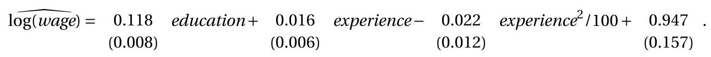
The standard errors are the square roots of the HC2 covariance matrix estimate
\[ \overline{\boldsymbol{V}}_{\widehat{\beta}}=\left(\begin{array}{cccc} 0.632 & 0.131 & -0.143 & -11.1 \\ 0.131 & 0.390 & -0.731 & -6.25 \\ -0.143 & -0.731 & 1.48 & 9.43 \\ -11.1 & -6.25 & 9.43 & 246 \end{array}\right) \times 10^{-4} . \]
We calculate that
\[ \begin{aligned} & \widehat{\theta}_{1}=100 \widehat{\beta}_{1}=100 \times 0.118=11.8 \\ & s\left(\widehat{\theta}_{1}\right)=\sqrt{100^{2} \times 0.632 \times 10^{-4}}=0.8 \\ & \widehat{\theta}_{2}=100 \widehat{\beta}_{2}+20 \widehat{\beta}_{3}=100 \times 0.016-20 \times 0.022=1.16 \\ & s\left(\widehat{\theta}_{2}\right)=\sqrt{\left(\begin{array}{ll}100 & 20\end{array}\right)\left(\begin{array}{cc}0.390 & -0.731 \\-0.731 & 1.48\end{array}\right)\left(\begin{array}{c}100 \\20\end{array}\right) \times 10^{-4}}=0.55 \\ & \widehat{\theta}_{3}=-50 \widehat{\beta}_{2} / \widehat{\beta}_{3}=50 \times 0.016 / 0.022=35.2 \end{aligned} \]
The calculations show that the estimate of the percentage return to education is \(12 %\) per year with a standard error of 0.8. The estimate of the percentage return to experience for those with 10 years of experience is \(1.2 %\) per year with a standard error of \(0.6\). The estimate of the experience level which maximizes expected log wages is 35 years with a standard error of 7 .
In Stata the nlcom command can be used after estimation to perform the same calculations. To illustrate, after estimation of (7.31) use the commands given below. In each case, Stata reports the coefficient estimate, asymptotic standard error, and \(95 %\) confidence interval.
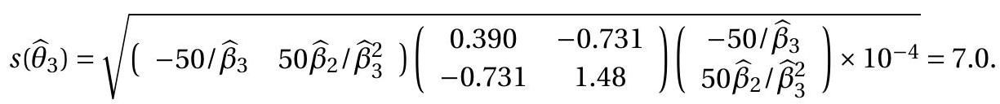
Stata Commands\ nlcom 100_b[education]\ nlcom 100_b[experience]+20_b[exp2]\ nlcom -50_b[experience \(] / 0_{-} \mathrm{b}[\exp 2]\)]. This is reasonably tight.
Percentage return to experience (per year) for individuals with 10 years experience. A \(90 %\) asymptotic confidence interval is \(1.1 \pm 1.645 \times 0.4=[0.5,1.8]\). The interval is positive but broad. This indicates that the return to experience is positive, but of uncertain magnitude. Experience level which maximizes expected log wages. An \(80 %\) asymptotic confidence interval is \(35 \pm 1.28 \times 7=[26,44]\). This is rather imprecise, indicating that the estimates are not very informative regarding this parameter.
7.12 Regression Intervals
In the linear regression model the conditional expectation of \(Y\) given \(X=x\) is
\[ m(x)=\mathbb{E}[Y \mid X=x]=x^{\prime} \beta . \]
In some cases we want to estimate \(m(x)\) at a particular point \(x\). Notice that this is a linear function of \(\beta\). Letting \(r(\beta)=x^{\prime} \beta\) and \(\theta=r(\beta)\) we see that \(\hat{m}(x)=\widehat{\theta}=x^{\prime} \widehat{\beta}\) and \(\boldsymbol{R}=x\) so \(s(\widehat{\theta})=\sqrt{x^{\prime} \widehat{\boldsymbol{V}}_{\widehat{\beta}} x}\). Thus an asymptotic \(95 %\) confidence interval for \(m(x)\) is
\[ \left[x^{\prime} \widehat{\beta} \pm 1.96 \sqrt{x^{\prime} \widehat{\boldsymbol{V}}_{\widehat{\beta}} x}\right] . \]
It is interesting to observe that if this is viewed as a function of \(x\) the width of the confidence interval is dependent on \(x\).
To illustrate we return to the log wage regression (3.12) of Section 3.7. The estimated regression equation is
\[ \widehat{\log (\text { wage })}=x^{\prime} \widehat{\beta}=0.155 x+0.698 \]
where \(x=e d u c a t i o n\). The covariance matrix estimate from (4.43) is
\[ \widehat{\boldsymbol{V}}_{\widehat{\beta}}=\left(\begin{array}{cc} 0.001 & -0.015 \\ -0.015 & 0.243 \end{array}\right) . \]
Thus the \(95 %\) confidence interval for the regression is
\[ 0.155 x+0.698 \pm 1.96 \sqrt{0.001 x^{2}-0.030 x+0.243} . \]
The estimated regression and 95% intervals are shown in Figure 7.4(a). Notice that the confidence bands take a hyperbolic shape. This means that the regression line is less precisely estimated for large and small values of education.
Plots of the estimated regression line and confidence intervals are especially useful when the regression includes nonlinear terms. To illustrate consider the log wage regression (7.31) which includes experience and its square and covariance matrix estimate (7.32). We are interested in plotting the regression estimate and regression intervals as a function of experience. Since the regression also includes education, to plot the estimates in a simple graph we fix education at a specific value. We select education=12. This only affects the level of the estimated regression since education enters without an interaction. Define the points of evaluation
\[ z(x)=\left(\begin{array}{c} 12 \\ x \\ x^{2} / 100 \\ 1 \end{array}\right) \]
where \(x=\) experience.
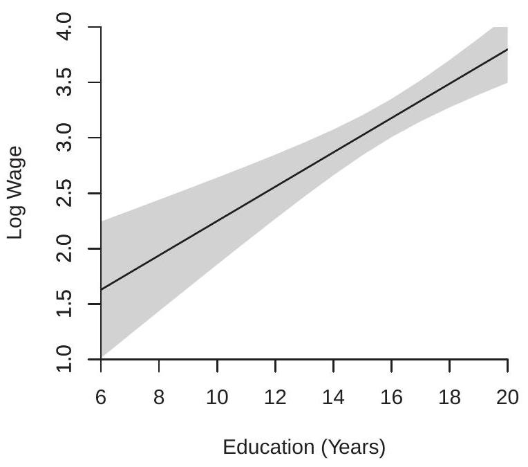
- Wage on Education
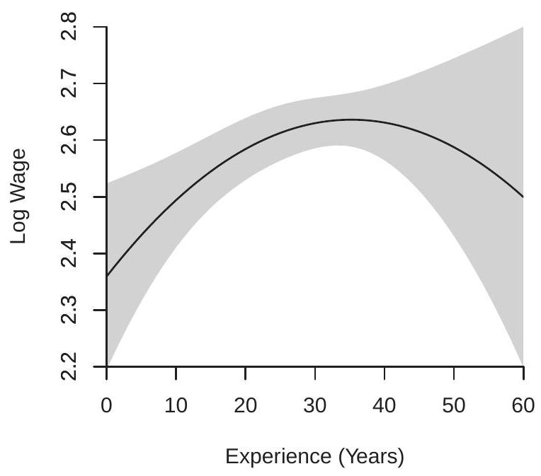
- Wage on Experience
Figure 7.4: Regression Intervals
The \(95 %\) regression interval for education \(=12\) as a function of \(x=\) experience is
\[ \begin{aligned} & 0.118 \times 12+0.016 x-0.022 x^{2} / 100+0.947 \\ & \pm 1.96 \sqrt{z(x)^{\prime}\left(\begin{array}{cccc}0.632 & 0.131 & -0.143 & -11.1 \\0.131 & 0.390 & -0.731 & -6.25 \\-0.143 & -0.731 & 1.48 & 9.43 \\-11.1 & -6.25 & 9.43 & 246\end{array}\right) z(x) \times 10^{-4}} \\ & =0.016 x-.00022 x^{2}+2.36 \\ & \pm 0.0196 \sqrt{70.608-9.356 x+0.54428 x^{2}-0.01462 x^{3}+0.000148 x^{4}} \text {. } \end{aligned} \]
The estimated regression and 95% intervals are shown in Figure 7.4(b). The regression interval widens greatly for small and large values of experience indicating considerable uncertainty about the effect of experience on mean wages for this population. The confidence bands take a more complicated shape than in Figure 7.4(a) due to the nonlinear specification.
7.13 Forecast Intervals
Suppose we are given a value of the regressor vector \(X_{n+1}\) for an individual outside the sample and we want to forecast (guess) \(Y_{n+1}\) for this individual. This is equivalent to forecasting \(Y_{n+1}\) given \(X_{n+1}=x\) which will generally be a function of \(x\). A reasonable forecasting rule is the conditional expectation \(m(x)\) as it is the mean-square minimizing forecast. A point forecast is the estimated conditional expectation \(\widehat{m}(x)=x^{\prime} \widehat{\beta}\). We would also like a measure of uncertainty for the forecast.
The forecast error is \(\widehat{e}_{n+1}=Y_{n+1}-\widehat{m}(x)=e_{n+1}-x^{\prime}(\widehat{\beta}-\beta)\). As the out-of-sample error \(e_{n+1}\) is inde- pendent of the in-sample estimator \(\widehat{\beta}\) this has conditional variance
\[ \begin{aligned} \mathbb{E}\left[\widehat{e}_{n+1}^{2} \mid X_{n+1}=x\right] &=\mathbb{E}\left[e_{n+1}^{2}-2 x^{\prime}(\widehat{\beta}-\beta) e_{n+1}+x^{\prime}(\widehat{\beta}-\beta)(\widehat{\beta}-\beta)^{\prime} x \mid X_{n+1}=x\right] \\ &=\mathbb{E}\left[e_{n+1}^{2} \mid X_{n+1}=x\right]+x^{\prime} \mathbb{E}\left[(\widehat{\beta}-\beta)(\widehat{\beta}-\beta)^{\prime}\right] x \\ &=\sigma^{2}(x)+x^{\prime} \boldsymbol{V}_{\widehat{\beta}} x . \end{aligned} \]
Under homoskedasticity, \(\mathbb{E}\left[e_{n+1}^{2} \mid X_{n+1}\right]=\sigma^{2}\). In this case a simple estimator of (7.36) is \(\widehat{\sigma}^{2}+x^{\prime} \boldsymbol{V}_{\widehat{\beta}} x\) so a standard error for the forecast is \(\widehat{s}(x)=\sqrt{\widehat{\sigma}^{2}+x^{\prime} \boldsymbol{V}_{\widehat{\beta}} x}\). Notice that this is different from the standard error for the conditional expectation.
The conventional 95% forecast interval for \(Y_{n+1}\) uses a normal approximation and equals \(\left[x^{\prime} \widehat{\beta} \pm 2 \widehat{s}(x)\right]\). It is difficult, however, to fully justify this choice. It would be correct if we have a normal approximation to the ratio
\[ \frac{e_{n+1}-x^{\prime}(\widehat{\beta}-\beta)}{\widehat{s}(x)} . \]
The difficulty is that the equation error \(e_{n+1}\) is generally non-normal and asymptotic theory cannot be applied to a single observation. The only special exception is the case where \(e_{n+1}\) has the exact distribution \(\mathrm{N}\left(0, \sigma^{2}\right)\) which is generally invalid.
An accurate forecast interval would use the conditional distribution of \(e_{n+1}\) given \(X_{n+1}=x\), which is more challenging to estimate. Due to this difficulty many applied forecasters use the simple approximate interval \(\left[x^{\prime} \widehat{\beta} \pm 2 \widehat{s}(x)\right]\) despite the lack of a convincing justification.
7.14 Wald Statistic
Let \(\theta=r(\beta): \mathbb{R}^{k} \rightarrow \mathbb{R}^{q}\) be any parameter vector of interest, \(\widehat{\theta}\) its estimator, and \(\widehat{\boldsymbol{V}}_{\widehat{\theta}}\) its covariance matrix estimator. Consider the quadratic form
\[ W(\theta)=(\widehat{\theta}-\theta)^{\prime} \widehat{\mathbf{V}}_{\widehat{\theta}}^{-1}(\widehat{\theta}-\theta)=n(\widehat{\theta}-\theta)^{\prime} \widehat{\boldsymbol{V}}_{\theta}^{-1}(\widehat{\theta}-\theta) . \]
where \(\widehat{\boldsymbol{V}}_{\theta}=n \widehat{\boldsymbol{V}}_{\widehat{\theta}}\). When \(q=1\), then \(W(\theta)=T(\theta)^{2}\) is the square of the t-ratio. When \(q>1, W(\theta)\) is typically called a Wald statistic as it was proposed by Wald (1943). We are interested in its sampling distribution.
The asymptotic distribution of \(W(\theta)\) is simple to derive given Theorem \(7.9\) and Theorem 7.10. They show that \(\sqrt{n}(\widehat{\theta}-\theta) \underset{d}{\longrightarrow} Z \sim \mathrm{N}\left(0, \boldsymbol{V}_{\theta}\right)\) and \(\widehat{\boldsymbol{V}}_{\theta} \underset{p}{\longrightarrow} \boldsymbol{V}_{\theta}\). It follows that
\[ W(\theta)=\sqrt{n}(\widehat{\theta}-\theta)^{\prime} \widehat{\boldsymbol{V}}_{\theta}^{-1} \sqrt{n}(\widehat{\theta}-\theta) \underset{d}{\longrightarrow} Z^{\prime} \boldsymbol{V}_{\theta}^{-1} Z \]
a quadratic in the normal random vector \(Z\). As shown in Theorem \(5.3 .5\) the distribution of this quadratic form is \(\chi_{q}^{2}\), a chi-square random variable with \(q\) degrees of freedom.
Theorem 7.13 Under Assumptions 7.2, \(7.3\) and 7.4, as \(n \rightarrow \infty, W(\theta) \underset{d}{\longrightarrow} \chi_{q}^{2}\).
Theorem \(7.13\) is used to justify multivariate confidence regions and multivariate hypothesis tests.
7.15 Homoskedastic Wald Statistic
Under the conditional homoskedasticity assumption \(\mathbb{E}\left[e^{2} \mid X\right]=\sigma^{2}\) we can construct the Wald statistic using the homoskedastic covariance matrix estimator \(\widehat{\boldsymbol{V}}_{\theta}^{0}\) defined in (7.29). This yields a homoskedastic Wald statistic
\[ W^{0}(\theta)=(\widehat{\theta}-\theta)^{\prime}\left(\widehat{\boldsymbol{V}}_{\widehat{\theta}}^{0}\right)^{-1}(\widehat{\theta}-\theta)=n(\widehat{\theta}-\theta)^{\prime}\left(\widehat{\boldsymbol{V}}_{\theta}^{0}\right)^{-1}(\widehat{\theta}-\theta) . \]
Under the assumption of conditional homoskedasticity it has the same asymptotic distribution as \(W(\theta)\)
Theorem 7.14 Under Assumptions 7.2, 7.3, and \(\mathbb{E}\left[e^{2} \mid X\right]=\sigma^{2}>0\), as \(n \rightarrow \infty\), \(W^{0}(\theta) \underset{d}{\longrightarrow} \chi_{q}^{2}\)
7.16 Confidence Regions
A confidence region \(\widehat{C}\) is a set estimator for \(\theta \in \mathbb{R}^{q}\) when \(q>1\). A confidence region \(\widehat{C}\) is a set in \(\mathbb{R}^{q}\) intended to cover the true parameter value with a pre-selected probability \(1-\alpha\). Thus an ideal confidence region has the coverage probability \(\mathbb{P}[\theta \in \widehat{C}]=1-\alpha\). In practice it is typically not possible to construct a region with exact coverage but we can calculate its asymptotic coverage.
When the parameter estimator satisfies the conditions of Theorem \(7.13\) a good choice for a confidence region is the ellipse
\[ \widehat{C}=\left\{\theta: W(\theta) \leq c_{1-\alpha}\right\} \]
with \(c_{1-\alpha}\) the \(1-\alpha\) quantile of the \(\chi_{q}^{2}\) distribution. (Thus \(F_{q}\left(c_{1-\alpha}\right)=1-\alpha\).) It can be computed by, for example, chi2inv \((1-\alpha, q)\) in MATLAB.
Theorem \(7.13\) implies
\[ \mathbb{P}[\theta \in \widehat{C}] \rightarrow \mathbb{P}\left[\chi_{q}^{2} \leq c_{1-\alpha}\right]=1-\alpha \]
which shows that \(\widehat{C}\) has asymptotic coverage \(1-\alpha\).
To illustrate the construction of a confidence region, consider the estimated regression (7.31) of
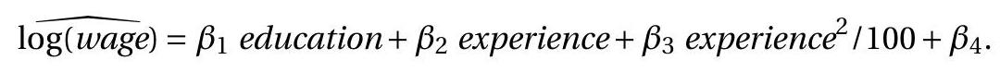
Suppose that the two parameters of interest are the percentage return to education \(\theta_{1}=100 \beta_{1}\) and the percentage return to experience for individuals with 10 years experience \(\theta_{2}=100 \beta_{2}+20 \beta_{3}\). These two parameters are a linear transformation of the regression parameters with point estimates
\[ \widehat{\theta}=\left(\begin{array}{cccc} 100 & 0 & 0 & 0 \\ 0 & 100 & 20 & 0 \end{array}\right) \widehat{\beta}=\left(\begin{array}{c} 11.8 \\ 1.2 \end{array}\right), \]
and have the covariance matrix estimate
\[ \widehat{\boldsymbol{V}}_{\widehat{\theta}}=\left(\begin{array}{cccc} 0 & 100 & 0 & 0 \\ 0 & 0 & 100 & 20 \end{array}\right) \widehat{\boldsymbol{V}}_{\widehat{\beta}}\left(\begin{array}{cc} 0 & 0 \\ 100 & 0 \\ 0 & 100 \\ 0 & 20 \end{array}\right)=\left(\begin{array}{cc} 0.632 & 0.103 \\ 0.103 & 0.157 \end{array}\right) \]
with inverse
\[ \widehat{\boldsymbol{V}}_{\widehat{\theta}}^{-1}=\left(\begin{array}{cc} 1.77 & -1.16 \\ -1.16 & 7.13 \end{array}\right) . \]
Thus the Wald statistic is
\[ \begin{aligned} W(\theta) &=(\widehat{\theta}-\theta)^{\prime} \widehat{\boldsymbol{V}}_{\widehat{\theta}}^{-1}(\widehat{\theta}-\theta) \\ &=\left(\begin{array}{c} 11.8-\theta_{1} \\ 1.2-\theta_{2} \end{array}\right)^{\prime}\left(\begin{array}{cc} 1.77 & -1.16 \\ -1.16 & 7.13 \end{array}\right)\left(\begin{array}{c} 11.8-\theta_{1} \\ 1.2-\theta_{2} \end{array}\right) \\ &=1.77\left(11.8-\theta_{1}\right)^{2}-2.32\left(11.8-\theta_{1}\right)\left(1.2-\theta_{2}\right)+7.13\left(1.2-\theta_{2}\right)^{2} . \end{aligned} \]
The \(90 %\) quantile of the \(\chi_{2}^{2}\) distribution is \(4.605\) (we use the \(\chi_{2}^{2}\) distribution as the dimension of \(\theta\) is two) so an asymptotic \(90 %\) confidence region for the two parameters is the interior of the ellipse \(W(\theta)=\) \(4.605\) which is displayed in Figure 7.5. Since the estimated correlation of the two coefficient estimates is modest (about \(0.3\) ) the region is modestly elliptical.
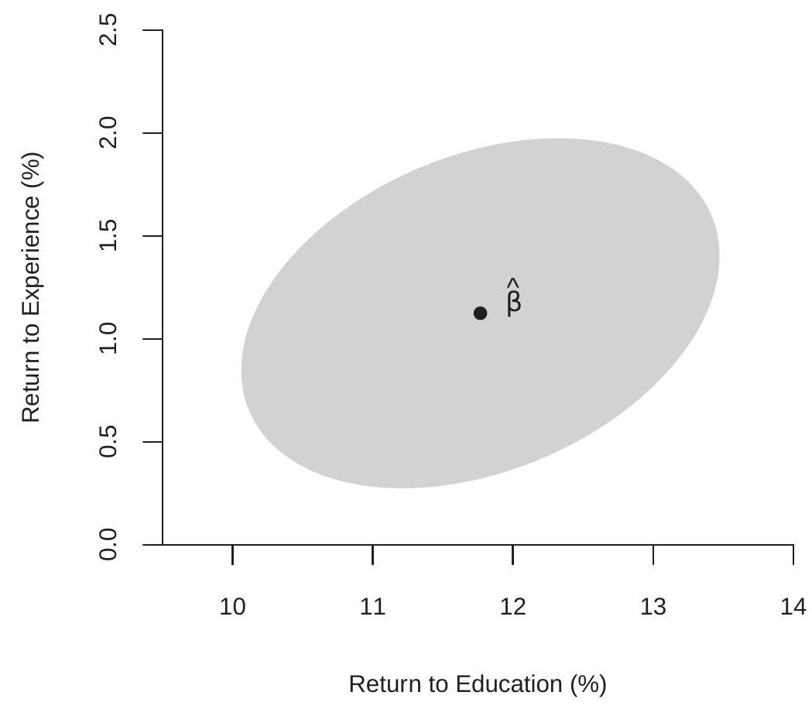
Figure 7.5: Confidence Region for Return to Experience and Return to Education
7.17 Edgeworth Expansion*
Theorem \(7.11\) showed that the t-ratio \(T(\theta)\) is asymptotically normal. In practice this means that we use the normal distribution to approximate the finite sample distribution of \(T\). How good is this approximation? Some insight into the accuracy of the normal approximation can be obtained by an Edgeworth expansion which is a higher-order approximation to the distribution of \(T\). The following result is an application of Theorem \(9.11\) of Probability and Statistics for Economists.
Theorem 7.15 Under Assumptions 7.2, 7.3, \(\Omega>0, \mathbb{E}\|e\|^{16}<\infty, \mathbb{E}\|X\|^{16}<\) \(\infty, g(\beta)\) has five continuous derivatives in a neighborhood of \(\beta\), and \(\mathbb{E}\left[\exp \left(t\left(\|e\|^{4}+\|X\|^{4}\right)\right)\right] \leq B<1\), as \(n \rightarrow \infty\)
\[ \mathbb{P}[T(\theta) \leq x]=\Phi(x)+n^{-1 / 2} p_{1}(x) \phi(x)+n^{-1} p_{2}(x) \phi(x)+o\left(n^{-1}\right) \]
uniformly in \(x\), where \(p_{1}(x)\) is an even polynomial of order 2 and \(p_{2}(x)\) is an odd polynomial of degree 5 with coefficients depending on the moments of \(e\) and \(X\) up to order \(16 .\)
Theorem \(7.15\) shows that the finite sample distribution of the t-ratio can be approximated up to \(o\left(n^{-1}\right)\) by the sum of three terms, the first being the standard normal distribution, the second a \(O\left(n^{-1 / 2}\right)\) adjustment, and the third a \(O\left(n^{-1}\right)\) adjustment.
Consider a one-sided confidence interval \(\widehat{C}=\left[\widehat{\theta}-z_{1-\alpha} s(\widehat{\theta}), \infty\right)\) where \(z_{1-\alpha}\) is the \(1-\alpha^{t h}\) quantile of \(Z \sim \mathrm{N}(0,1)\), thus \(\Phi\left(z_{1-\alpha}\right)-1-\alpha\). Then
\[ \begin{aligned} \mathbb{P}[\theta \in \widehat{C}] &=\mathbb{P}\left[T(\theta) \leq z_{1-\alpha}\right] \\ &=\Phi\left(z_{1-\alpha}\right)+n^{-1 / 2} p_{1}\left(z_{1-\alpha}\right) \phi\left(z_{1-\alpha}\right)+O\left(n^{-1}\right) \\ &=1-\alpha+O\left(n^{-1 / 2}\right) . \end{aligned} \]
This means that the actual coverage is within \(O\left(n^{-1 / 2}\right)\) of the desired \(1-\alpha\) level.
Now consider a two-sided interval \(\widehat{C}=\left[\widehat{\theta}-z_{1-\alpha / 2} s(\widehat{\theta}), \widehat{\theta}+z_{1-\alpha / 2} s(\widehat{\theta})\right]\). It has coverage
\[ \begin{aligned} \mathbb{P}[\theta \in \widehat{C}] &=\mathbb{P}\left[|T(\theta)| \leq z_{1-\alpha / 2}\right] \\ &=2 \Phi\left(z_{1-\alpha / 2}\right)-1+n^{-1} 2 p_{2}\left(z_{1-\alpha / 2}\right) \phi\left(z_{1-\alpha / 2}\right)+o\left(n^{-1}\right) \\ &=1-\alpha+O\left(n^{-1}\right) . \end{aligned} \]
This means that the actual coverage is within \(O\left(n^{-1}\right)\) of the desired \(1-\alpha\) level. The accuracy is better than the one-sided interval because the \(O\left(n^{-1 / 2}\right)\) term in the Edgeworth expansion has offsetting effects in the two tails of the distribution.
7.18 Uniformly Consistent Residuals*
It seems natural to view the residuals \(\widehat{e}_{i}\) as estimators of the unknown errors \(e_{i}\). Are they consistent? In this section we develop a convergence result.
We can write the residual as
\[ \widehat{e}_{i}=Y_{i}-X_{i}^{\prime} \widehat{\beta}=e_{i}-X_{i}^{\prime}(\widehat{\beta}-\beta) . \]
Since \(\widehat{\beta}-\beta \underset{p}{\longrightarrow} 0\) it seems reasonable to guess that \(\widehat{e}_{i}\) will be close to \(e_{i}\) if \(n\) is large.
We can bound the difference in (7.39) using the Schwarz inequality (B.12) to find
\[ \left|\widehat{e}_{i}-e_{i}\right|=\left|X_{i}^{\prime}(\widehat{\beta}-\beta)\right| \leq\left\|X_{i}\right\|\|\widehat{\beta}-\beta\| . \]
To bound (7.40) we can use \(\|\widehat{\beta}-\beta\|=O_{p}\left(n^{-1 / 2}\right)\) from Theorem 7.3. We also need to bound the random variable \(\left\|X_{i}\right\|\). If the regressor is bounded, that is, \(\left\|X_{i}\right\| \leq B<\infty\), then \(\left|\widehat{e}_{i}-e_{i}\right| \leq B\|\widehat{\beta}-\beta\|=O_{p}\left(n^{-1 / 2}\right)\). However if the regressor does not have bounded support then we have to be more careful.
The key is Theorem \(6.15\) which shows that \(\mathbb{E}\|X\|^{r}<\infty\) implies \(X_{i}=o_{p}\left(n^{1 / r}\right)\) uniformly in \(i\), or
\[ n^{-1 / r} \max _{1 \leq i \leq n}\left\|X_{i}\right\| \underset{p}{\longrightarrow} 0 . \]
Applied to (7.40) we obtain
\[ \max _{1 \leq i \leq n}\left|\widehat{e}_{i}-e_{i}\right| \leq \max _{1 \leq i \leq n}\left\|X_{i}\right\|\|\widehat{\beta}-\beta\|=o_{p}\left(n^{-1 / 2+1 / r}\right) . \]
We have shown the following.
Theorem 7.16 Under Assumption \(7.2\) and \(\mathbb{E}\|X\|^{r}<\infty\), then
\[ \max _{1 \leq i \leq n}\left|\widehat{e}_{i}-e_{i}\right|=o_{p}\left(n^{-1 / 2+1 / r}\right) . \]
The rate of convergence in (7.41) depends on \(r\). Assumption \(7.2\) requires \(r \geq 4\) so the rate of convergence is at least \(o_{p}\left(n^{-1 / 4}\right)\). As \(r\) increases the rate improves.
We mentioned in Section \(7.7\) that there are multiple ways to prove the consistency of the covariance matrix estimator \(\widehat{\Omega}\). We now show that Theorem \(7.16\) provides one simple method to establish (7.23) and thus Theorem 7.6. Let \(q_{n}=\max _{1 \leq i \leq n}\left|\widehat{e}_{i}-e_{i}\right|=o_{p}\left(n^{-1 / 4}\right)\). Since \(\widehat{e}_{i}^{2}-e_{i}^{2}=2 e_{i}\left(\widehat{e}_{i}-e_{i}\right)+\left(\widehat{e}_{i}-e_{i}\right)^{2}\), then
\[ \begin{aligned} \left\|\frac{1}{n} \sum_{i=1}^{n} X_{i} X_{i}^{\prime}\left(\widehat{e}_{i}^{2}-e_{i}^{2}\right)\right\| & \leq \frac{1}{n} \sum_{i=1}^{n}\left\|X_{i} X_{i}^{\prime}\right\|\left|\widehat{e}_{i}^{2}-e_{i}^{2}\right| \\ & \leq \frac{2}{n} \sum_{i=1}^{n}\left\|X_{i}\right\|^{2}\left|e _ { i } \left\|\widehat{e}_{i}-e_{i}\left|+\frac{1}{n} \sum_{i=1}^{n}\left\|X_{i}\right\|^{2}\right| \widehat{e}_{i}-\left.e_{i}\right|^{2}\right.\right.\\ & \leq \frac{2}{n} \sum_{i=1}^{n}\left\|X_{i}\right\|^{2}\left|e_{i}\right| q_{n}+\frac{1}{n} \sum_{i=1}^{n}\left\|X_{i}\right\|^{2} q_{n}^{2} \\ & \leq o_{p}\left(n^{-1 / 4}\right) . \end{aligned} \]
7.19 Asymptotic Leverage*
Recall the definition of leverage from (3.40) \(h_{i i}=X_{i}^{\prime}\left(\boldsymbol{X}^{\prime} \boldsymbol{X}\right)^{-1} X_{i}\). These are the diagonal elements of the projection matrix \(\boldsymbol{P}\) and appear in the formula for leave-one-out prediction errors and \(\mathrm{HC} 2\) and HC3 covariance matrix estimators. We can show that under i.i.d. sampling the leverage values are uniformly asymptotically small.
Let \(\lambda_{\min }(\boldsymbol{A})\) and \(\lambda_{\max }(\boldsymbol{A})\) denote the smallest and largest eigenvalues of a symmetric square matrix \(\boldsymbol{A}\) and note that \(\lambda_{\max }\left(\boldsymbol{A}^{-1}\right)=\left(\lambda_{\min }(\boldsymbol{A})\right)^{-1}\). Since \(\frac{1}{n} \boldsymbol{X}^{\prime} \boldsymbol{X} \underset{p}{\rightarrow} \boldsymbol{Q}_{X X}>0\), by the CMT \(\lambda_{\min }\left(\frac{1}{n} \boldsymbol{X}^{\prime} \boldsymbol{X}\right) \underset{p}{\rightarrow} \lambda_{\min }\left(\boldsymbol{Q}_{X X}\right)>0\). (The latter is positive since \(\boldsymbol{Q}_{X X}\) is positive definite and thus all its eigenvalues are positive.) Then by the Quadratic Inequality (B.18)
\[ \begin{aligned} h_{i i} &=X_{i}^{\prime}\left(\boldsymbol{X}^{\prime} \boldsymbol{X}\right)^{-1} X_{i} \\ & \leq \lambda_{\max }\left(\left(\boldsymbol{X}^{\prime} \boldsymbol{X}\right)^{-1}\right)\left(X_{i}^{\prime} X_{i}\right) \\ &=\left(\lambda_{\min }\left(\frac{1}{n} \boldsymbol{X}^{\prime} \boldsymbol{X}\right)\right)^{-1} \frac{1}{n}\left\|X_{i}\right\|^{2} \\ & \leq\left(\lambda_{\min }\left(\boldsymbol{Q}_{X X}\right)+o_{p}(1)\right)^{-1} \frac{1}{n} \max _{1 \leq i \leq n}\left\|X_{i}\right\|^{2} . \end{aligned} \]
Theorem \(6.15\) shows that \(\mathbb{E}\|X\|^{r}<\infty\) implies \(\max _{1 \leq i \leq n}\left\|X_{i}\right\|^{2}=\left(\max _{1 \leq i \leq n}\left\|X_{i}\right\|\right)^{2}=o_{p}\left(n^{2 / r}\right)\) and thus (7.42) is \(o_{p}\left(n^{2 / r-1}\right)\)
Theorem 7.17 If \(X_{i}\) is i.i.d., \(\boldsymbol{Q}_{X X}>0\), and \(\mathbb{E}\|X\|^{r}<\infty\) for some \(r \geq 2\), then \(\max _{1 \leq i \leq n} h_{i i}=o_{p}\left(n^{2 / r-1}\right)\).
For any \(r \geq 2\) then \(h_{i i}=o_{p}\) (1) (uniformly in \(i \leq n\) ). Larger \(r\) implies a faster rate of convergence. For example \(r=4\) implies \(h_{i i}=o_{p}\left(n^{-1 / 2}\right)\).
Theorem (7.17) implies that under random sampling with finite variances and large samples no individual observation should have a large leverage value. Consequently, individual observations should not be influential unless one of these conditions is violated.
7.20 Exercises
Exercise 7.1 Take the model \(Y=X_{1}^{\prime} \beta_{1}+X_{2}^{\prime} \beta_{2}+e\) with \(\mathbb{E}[X e]=0\). Suppose that \(\beta_{1}\) is estimated by regressing \(Y\) on \(X_{1}\) only. Find the probability limit of this estimator. In general, is it consistent for \(\beta_{1}\) ? If not, under what conditions is this estimator consistent for \(\beta_{1}\) ?
Exercise 7.2 Take the model \(Y=X^{\prime} \beta+e\) with \(\mathbb{E}[X e]=0\). Define the ridge regression estimator
\[ \widehat{\beta}=\left(\sum_{i=1}^{n} X_{i} X_{i}^{\prime}+\lambda \boldsymbol{I}_{k}\right)^{-1}\left(\sum_{i=1}^{n} X_{i} Y_{i}\right) \]
here \(\lambda>0\) is a fixed constant. Find the probability limit of \(\widehat{\beta}\) as \(n \rightarrow \infty\). Is \(\widehat{\beta}\) consistent for \(\beta\) ?
Exercise 7.3 For the ridge regression estimator (7.43), set \(\lambda=c n\) where \(c>0\) is fixed as \(n \rightarrow \infty\). Find the probability limit of \(\widehat{\beta}\) as \(n \rightarrow \infty\). Exercise 7.4 Verify some of the calculations reported in Section 7.4. Specifically, suppose that \(X_{1}\) and \(X_{2}\) only take the values \(\{-1,+1\}\), symmetrically, with
\[ \begin{aligned} \mathbb{P}\left[X_{1}=X_{2}=1\right] &=\mathbb{P}\left[X_{1}=X_{2}=-1\right]=3 / 8 \\ \mathbb{P}\left[X_{1}=1, X_{2}=-1\right] &=\mathbb{P}\left[X_{1}=-1, X_{2 i}=1\right]=1 / 8 \\ \mathbb{E}\left[e_{i}^{2} \mid X_{1}=X_{2}\right] &=\frac{5}{4} \\ \mathbb{E}\left[e_{i}^{2} \mid X_{1} \neq X_{2}\right] &=\frac{1}{4} . \end{aligned} \]
Verify the following:\ (a) \(\mathbb{E}\left[X_{1}\right]=0\)\ (b) \(\mathbb{E}\left[X_{1}^{2}\right]=1\)\ (c) \(\mathbb{E}\left[X_{1} X_{2}\right]=\frac{1}{2}\)\ (d) \(\mathbb{E}\left[e^{2}\right]=1\)\ (e) \(\mathbb{E}\left[X_{1}^{2} e^{2}\right]=1\)\ (f) \(\mathbb{E}\left[X_{1} X_{2} e^{2}\right]=\frac{7}{8}\).
Exercise 7.5 Show (7.13)-(7.16).
Exercise \(7.6\) The model is
\[ \begin{aligned} Y &=X^{\prime} \beta+e \\ \mathbb{E}[X e] &=0 \\ \Omega &=\mathbb{E}\left[X X^{\prime} e^{2}\right] . \end{aligned} \]
Find the method of moments estimators \((\widehat{\beta}, \widehat{\Omega})\) for \((\beta, \Omega)\).
Exercise 7.7 Of the variables \(\left(Y^{*}, Y, X\right)\) only the pair \((Y, X)\) are observed. In this case we say that \(Y^{*}\) is a latent variable. Suppose
\[ \begin{aligned} Y^{*} &=X^{\prime} \beta+e \\ \mathbb{E}[X e] &=0 \\ Y &=Y^{*}+u \end{aligned} \]
where \(u\) is a measurement error satisfying
\[ \begin{aligned} \mathbb{E}[X u] &=0 \\ \mathbb{E}\left[Y^{*} u\right] &=0 . \end{aligned} \]
Let \(\widehat{\beta}\) denote the OLS coefficient from the regression of \(Y\) on \(X\).
Is \(\beta\) the coefficient from the linear projection of \(Y\) on \(X\) ? (b) Is \(\widehat{\beta}\) consistent for \(\beta\) as \(n \rightarrow \infty\) ?
Find the asymptotic distribution of \(\sqrt{n}(\widehat{\beta}-\beta)\) as \(n \rightarrow \infty\).
Exercise 7.8 Find the asymptotic distribution of \(\sqrt{n}\left(\widehat{\sigma}^{2}-\sigma^{2}\right)\) as \(n \rightarrow \infty\).
Exercise 7.9 The model is \(Y=X \beta+e\) with \(\mathbb{E}[e \mid X]=0\) and \(X \in \mathbb{R}\). Consider the two estimators
\[ \begin{aligned} &\widehat{\beta}=\frac{\sum_{i=1}^{n} X_{i} Y_{i}}{\sum_{i=1}^{n} X_{i}^{2}} \\ &\widetilde{\beta}=\frac{1}{n} \sum_{i=1}^{n} \frac{Y_{i}}{X_{i}} . \end{aligned} \]
Under the stated assumptions are both estimators consistent for \(\beta\) ?
Are there conditions under which either estimator is efficient?
Exercise 7.10 In the homoskedastic regression model \(Y=X^{\prime} \beta+e\) with \(\mathbb{E}[e \mid x]=0\) and \(\mathbb{E}\left[e^{2} \mid X\right]=\sigma^{2}\) suppose \(\widehat{\beta}\) is the OLS estimator of \(\beta\) with covariance matrix estimator \(\widehat{\boldsymbol{V}}_{\widehat{\beta}}\) based on a sample of size \(n\). Let \(\widehat{\sigma}^{2}\) be the estimator of \(\sigma^{2}\). You wish to forecast an out-of-sample value of \(Y_{n+1}\) given that \(X_{n+1}=x\). Thus the available information is the sample, the estimates \(\left(\widehat{\beta}, \widehat{\boldsymbol{V}}_{\widehat{\beta}}, \widehat{\sigma}^{2}\right)\), the residuals \(\widehat{e}_{i}\), and the out-of-sample value of the regressors \(X_{n+1}\).
Find a point forecast of \(Y_{n+1}\).
Find an estimator of the variance of this forecast.
Exercise 7.11 Take a regression model with i.i.d. observations \(\left(Y_{i}, X_{i}\right)\) with \(X \in \mathbb{R}\)
\[ \begin{aligned} Y &=X \beta+e \\ \mathbb{E}[e \mid X] &=0 \\ \Omega &=\mathbb{E}\left[X^{2} e^{2}\right] . \end{aligned} \]
Let \(\widehat{\beta}\) be the OLS estimator of \(\beta\) with residuals \(\widehat{e}_{i}=Y_{i}-X_{i} \widehat{\beta}\). Consider the estimators of \(\Omega\)
\[ \begin{aligned} &\widetilde{\Omega}=\frac{1}{n} \sum_{i=1}^{n} X_{i}^{2} e_{i}^{2} \\ &\widehat{\Omega}=\frac{1}{n} \sum_{i=1}^{n} X_{i}^{2} \widehat{e}_{i}^{2} . \end{aligned} \]
Find the asymptotic distribution of \(\sqrt{n}(\widetilde{\Omega}-\Omega)\) as \(n \rightarrow \infty\).
Find the asymptotic distribution of \(\sqrt{n}(\widehat{\Omega}-\Omega)\) as \(n \rightarrow \infty\).
How do you use the regression assumption \(\mathbb{E}\left[e_{i} \mid X_{i}\right]=0\) in your answer to (b)?
Exercise 7.12 Consider the model
\[ \begin{aligned} Y &=\alpha+\beta X+e \\ \mathbb{E}[e] &=0 \\ \mathbb{E}[X e] &=0 \end{aligned} \]
with both \(Y\) and \(X\) scalar. Assuming \(\alpha>0\) and \(\beta<0\) suppose the parameter of interest is the area under the regression curve (e.g. consumer surplus), which is \(A=-\alpha^{2} / 2 \beta\).
Let \(\widehat{\theta}=(\widehat{\alpha}, \widehat{\beta})^{\prime}\) be the least squares estimators of \(\theta=(\alpha, \beta)^{\prime}\) so that \(\sqrt{n}(\widehat{\theta}-\theta) \rightarrow{ }_{d} N\left(0, \boldsymbol{V}_{\theta}\right)\) and let \(\widehat{\boldsymbol{V}}_{\theta}\) be a standard estimator for \(\boldsymbol{V}_{\theta}\).
Given the above, describe an estimator of \(A\).
Construct an asymptotic \(1-\eta\) confidence interval for \(A\).
Exercise 7.13 Consider an i.i.d. sample \(\left\{Y_{i}, X_{i}\right\} i=1, \ldots, n\) where \(Y\) and \(X\) are scalar. Consider the reverse projection model \(X=Y \gamma+u\) with \(\mathbb{E}[Y u]=0\) and define the parameter of interest as \(\theta=1 / \gamma\).
Propose an estimator \(\widehat{\gamma}\) of \(\gamma\).
Propose an estimator \(\widehat{\theta}\) of \(\theta\).
Find the asymptotic distribution of \(\widehat{\theta}\).
Find an asymptotic standard error for \(\widehat{\theta}\).
Exercise 7.14 Take the model
\[ \begin{aligned} Y &=X_{1} \beta_{1}+X_{2} \beta_{2}+e \\ \mathbb{E}[X e] &=0 \end{aligned} \]
with both \(\beta_{1} \in \mathbb{R}\) and \(\beta_{2} \in \mathbb{R}\), and define the parameter \(\theta=\beta_{1} \beta_{2}\).
What is the appropriate estimator \(\widehat{\theta}\) for \(\theta\) ?
Find the asymptotic distribution of \(\widehat{\theta}\) under standard regularity conditions.
Show how to calculate an asymptotic \(95 %\) confidence interval for \(\theta\).
Exercise 7.15 Take the linear model \(Y=X \beta+e\) with \(\mathbb{E}[e \mid X]=0\) and \(X \in \mathbb{R}\). Consider the estimator
\[ \widehat{\beta}=\frac{\sum_{i=1}^{n} X_{i}^{3} Y_{i}}{\sum_{i=1}^{n} X_{i}^{4}} \]
Find the asymptotic distribution of \(\sqrt{n}(\widehat{\beta}-\beta)\) as \(n \rightarrow \infty\).
Exercise 7.16 From an i.i.d. sample \(\left(Y_{i}, X_{i}\right)\) of size \(n\) you randomly take half the observations. You estimate a least squares regression of \(Y\) on \(X\) using only this sub-sample. Is the estimated slope coefficient \(\widehat{\beta}\) consistent for the population projection coefficient? Explain your reasoning.
Exercise 7.17 An economist reports a set of parameter estimates, including the coefficient estimates \(\widehat{\beta}_{1}=1.0, \widehat{\beta}_{2}=0.8\), and standard errors \(s\left(\widehat{\beta}_{1}\right)=0.07\) and \(s\left(\widehat{\beta}_{2}\right)=0.07\). The author writes “The estimates show that \(\beta_{1}\) is larger than \(\beta_{2} . "\)
Write down the formula for an asymptotic 95% confidence interval for \(\theta=\beta_{1}-\beta_{2}\), expressed as a function of \(\widehat{\beta}_{1}, \widehat{\beta}_{2}, s\left(\widehat{\beta}_{1}\right), s\left(\widehat{\beta}_{2}\right)\) and \(\widehat{\rho}\), where \(\widehat{\rho}\) is the estimated correlation between \(\widehat{\beta}_{1}\) and \(\widehat{\beta}_{2}\).
Can \(\widehat{\rho}\) be calculated from the reported information? (c) Is the author correct? Does the reported information support the author’s claim?
Exercise 7.18 Suppose an economic model suggests
\[ m(x)=\mathbb{E}[Y \mid X=x]=\beta_{0}+\beta_{1} x+\beta_{2} x^{2} \]
where \(X \in \mathbb{R}\). You have a random sample \(\left(Y_{i}, X_{i}\right), i=1, \ldots, n\).
Describe how to estimate \(m(x)\) at a given value \(x\).
Describe (be specific) an appropriate confidence interval for \(m(x)\).
Exercise 7.19 Take the model \(Y=X^{\prime} \beta+e\) with \(\mathbb{E}[X e]=0\) and suppose you have observations \(i=1, \ldots, 2 n\). (The number of observations is \(2 n\).) You randomly split the sample in half, (each has \(n\) observations), calculate \(\widehat{\beta}_{1}\) by least squares on the first sample, and \(\widehat{\beta}_{2}\) by least squares on the second sample. What is the asymptotic distribution of \(\sqrt{n}\left(\widehat{\beta}_{1}-\widehat{\beta}_{2}\right)\) ?
Exercise 7.20 The variables \(\left\{Y_{i}, X_{i}, W_{i}\right\}\) are a random sample. The parameter \(\beta\) is estimated by minimizing the criterion function
\[ S(\beta)=\sum_{i=1}^{n} W_{i}\left(Y_{i}-X_{i}^{\prime} \beta\right)^{2} \]
That is \(\widehat{\beta}=\operatorname{argmin}_{\beta} S(\beta)\).
Find an explicit expression for \(\widehat{\beta}\).
What population parameter \(\beta\) is \(\widehat{\beta}\) estimating? Be explicit about any assumptions you need to impose. Do not make more assumptions than necessary.
Find the probability limit for \(\widehat{\beta}\) as \(n \rightarrow \infty\).
Find the asymptotic distribution of \(\sqrt{n}(\widehat{\beta}-\beta)\) as \(n \rightarrow \infty\).
Exercise 7.21 Take the model
\[ \begin{aligned} Y &=X^{\prime} \beta+e \\ \mathbb{E}[e \mid X] &=0 \\ \mathbb{E}\left[e^{2} \mid X\right] &=Z^{\prime} \gamma \end{aligned} \]
where \(Z\) is a (vector) function of \(X\). The sample is \(i=1, \ldots, n\) with i.i.d. observations. Assume that \(Z^{\prime} \gamma>0\) for all \(Z\). Suppose you want to forecast \(Y_{n+1}\) given \(X_{n+1}=x\) and \(Z_{n+1}=z\) for an out-of-sample observation \(n+1\). Describe how you would construct a point forecast and a forecast interval for \(Y_{n+1}\).
Exercise 7.22 Take the model
\[ \begin{aligned} Y &=X^{\prime} \beta+e \\ \mathbb{E}[e \mid X] &=0 \\ Z &=X^{\prime} \beta \gamma+u \\ \mathbb{E}[u \mid X] &=0 \end{aligned} \]
where \(X\) is a \(k\) vector and \(Z\) is scalar. Your goal is to estimate the scalar parameter \(\gamma\). You use a two-step estimator: - Estimate \(\widehat{\beta}\) by least squares of \(Y\) on \(X\).
- Estimate \(\widehat{\gamma}\) by least squares of \(Z\) on \(X^{\prime} \widehat{\beta}\).
Show that \(\widehat{\gamma}\) is consistent for \(\gamma\).
Find the asymptotic distribution of \(\widehat{\gamma}\) when \(\gamma=0\)
Exercise 7.23 The model is \(Y=X+e\) with \(\mathbb{E}[e \mid X]=0\) and \(X \in \mathbb{R}\). Consider the estimator
\[ \widetilde{\beta}=\frac{1}{n} \sum_{i=1}^{n} \frac{Y_{i}}{X_{i}} . \]
Find conditions under which \(\widetilde{\beta}\) is consistent for \(\beta\) as \(n \rightarrow \infty\).
Exercise 7.24 The parameter \(\beta\) is defined in the model \(Y=X^{*} \beta+e\) where \(e\) is independent of \(X^{*} \geq 0\), \(\mathbb{E}[e]=0, \mathbb{E}\left[e^{2}\right]=\sigma^{2}\). The observables are \((Y, X)\) where \(X=X^{*} v\) and \(v>0\) is random scale measurement error, independent of \(X^{*}\) and \(e\). Consider the least squares estimator \(\widehat{\beta}\) for \(\beta\).
Find the plim of \(\widehat{\beta}\) expressed in terms of \(\beta\) and moments of \((X, v, e)\).
Can you find a non-trivial condition under which \(\widehat{\beta}\) is consistent for \(\beta\) ? (By non-trivial we mean something other than \(v=1\).)
Exercise 7.25 Take the projection model \(Y=X^{\prime} \beta+e\) with \(\mathbb{E}[X e]=0\). For a positive function \(w(x)\) let \(W_{i}=w\left(X_{i}\right)\). Consider the estimator
\[ \widetilde{\beta}=\left(\sum_{i=1}^{n} W_{i} X_{i} X_{i}^{\prime}\right)^{-1}\left(\sum_{i=1}^{n} W_{i} X_{i} Y_{i}\right) . \]
Find the probability limit (as \(n \rightarrow \infty\) ) of \(\widetilde{\beta}\). Do you need to add an assumption? Is \(\widetilde{\beta}\) consistent for \(\widetilde{\beta}\) ? If not, under what assumption is \(\widetilde{\beta}\) consistent for \(\beta\) ?
Exercise 7.26 Take the regression model
\[ \begin{aligned} Y &=X^{\prime} \beta+e \\ \mathbb{E}[e \mid X] &=0 \\ \mathbb{E}\left[e^{2} \mid X=x\right] &=\sigma^{2}(x) \end{aligned} \]
with \(X \in \mathbb{R}^{k}\). Assume that \(\mathbb{P}[e=0]=0\). Consider the infeasible estimator
\[ \widetilde{\beta}=\left(\sum_{i=1}^{n} e_{i}^{-2} X_{i} X_{i}^{\prime}\right)^{-1}\left(\sum_{i=1}^{n} e_{i}^{-2} X_{i} Y_{i}\right) . \]
This is a WLS estimator using the weights \(e_{i}^{-2}\).
Find the asymptotic distribution of \(\widetilde{\beta}\).
Contrast your result with the asymptotic distribution of infeasible GLS. Exercise 7.27 The model is \(Y=X^{\prime} \beta+e\) with \(\mathbb{E}[e \mid X]=0\). An econometrician is worried about the impact of some unusually large values of the regressors. The model is thus estimated on the subsample for which \(\left|X_{i}\right| \leq c\) for some fixed \(c\). Let \(\widetilde{\beta}\) denote the OLS estimator on this subsample. It equals
\[ \widetilde{\beta}=\left(\sum_{i=1}^{n} X_{i} X_{i}^{\prime} \mathbb{1}\left\{\left|X_{i}\right| \leq c\right\}\right)^{-1}\left(\sum_{i=1}^{n} X_{i} Y_{i} \mathbb{1}\left\{\left|X_{i}\right| \leq c\right\}\right) . \]
Show that \(\widetilde{\beta} \underset{p}{\longrightarrow} \beta\).
Find the asymptotic distribution of \(\sqrt{n}(\widetilde{\beta}-\beta)\).
Exercise 7.28 As in Exercise 3.26, use the cps09mar dataset and the subsample of white male Hispanics. Estimate the regression
\[ \widehat{\log (\text { wage })}=\beta_{1} \text { education }+\beta_{2} \text { experience }+\beta_{3} \text { experience }^{2} / 100+\beta_{4} . \]
Report the coefficient estimates and robust standard errors.
Let \(\theta\) be the ratio of the return to one year of education to the return to one year of experience for experience \(=10\). Write \(\theta\) as a function of the regression coefficients and variables. Compute \(\widehat{\theta}\) from the estimated model.
Write out the formula for the asymptotic standard error for \(\hat{\theta}\) as a function of the covariance matrix for \(\widehat{\beta}\). Compute \(s(\widehat{\theta})\) from the estimated model.
Construct a \(90 %\) asymptotic confidence interval for \(\theta\) from the estimated model.
Compute the regression function at education \(=12\) and experience \(=20\). Compute a 95% confidence interval for the regression function at this point.
Consider an out-of-sample individual with 16 years of education and 5 years experience. Construct an \(80 %\) forecast interval for their log wage and wage. [To obtain the forecast interval for the wage, apply the exponential function to both endpoints.]